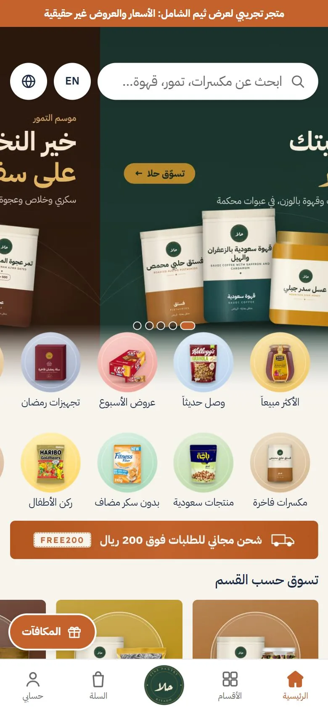
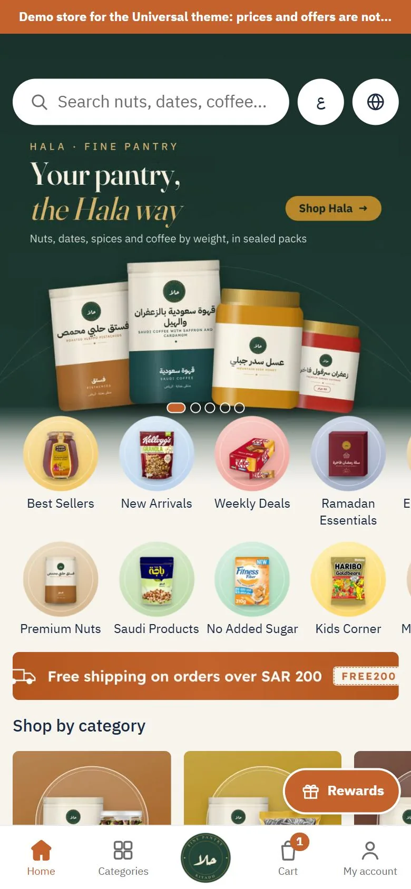
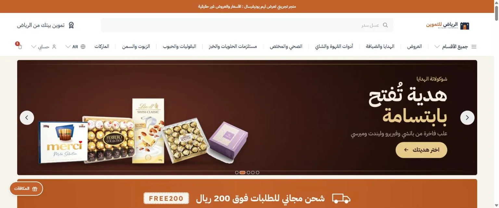
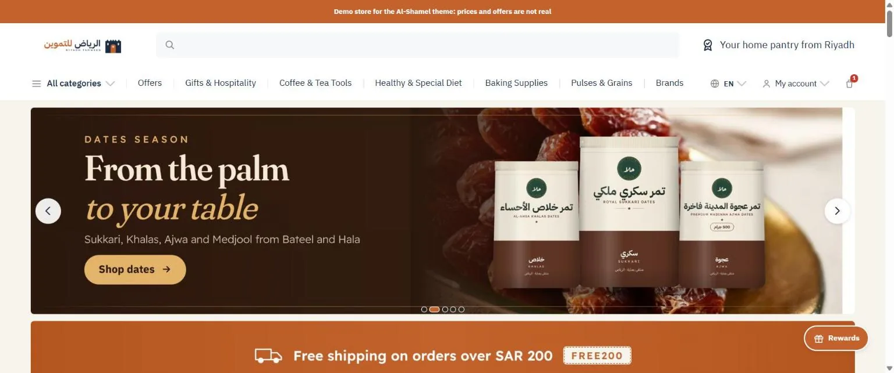

ييونيفرسالUniversalدليل الاستخدام · الإصدار 1.0User guide · version 1.0الفهرسContents
ثيم لمتاجر زدA theme for Zid stores
دليل استخدام ثيم يونيفرسالUniversal theme user guide
كل ما يحتاجه التاجر لتركيب الثيم وبناء رئيسيته وضبط صفحاته، من أول يوم إلى ما بعد الإطلاق. الأمثلة من المتجر التجريبي «الرياض للتموين»، وكل إعداد مذكور باسمه كما يظهر في محرر الثيم في زد.Everything a merchant needs to install the theme, build the home page and set up every page, from day one to after launch. Examples come from the demo store “Riyadh Tamween”, and every setting is named exactly as it appears in Zid’s theme editor.
يونيفرسال ثيم زد يبني متجراً كاملاً من الرئيسية إلى السلة، مصمم للجوال أولاً ويعمل بالعربية والإنجليزية معاً، ويترك كل قرار في يد التاجر من محرر الثيم.Universal is a Zid theme that builds the whole store, from the home page to the cart. It is designed for phones first, works in Arabic and English together, and leaves every decision to the merchant in the theme editor.


لقطة من المتجر التجريبيDemo-store screenshotdemo/home-m-ar.webp · home-m-en.webp
الجوالPhoneرئيسية المتجر التجريبي «الرياض للتموين».The demo store “Riyadh Tamween”, home page.


لقطة من المتجر التجريبيDemo-store screenshotdemo/home-d-ar.webp · home-d-en.webp
الكمبيوترComputerالصفحة نفسها بهيدر الكمبيوتر وفوتره.The same page with the computer header and footer.
لمن هذا الثيمWho it is for
لأي متجر يبيع تشكيلة واسعة بأقسام وماركات كثيرة ويأتيه معظم زواره من الجوال: الأطعمة والمكسرات والتمور والقهوة، والعطارة والعطور، والعناية والتجميل، والأزياء، وأي متجر يحتاج رئيسية غنية بالبنرات والعروض. المتجر التجريبي «الرياض للتموين» فيه نحو 1000 منتج و20 قسماً رئيسياً وعشرات الماركات، وهو مثال حي على ما يتحمله الثيم.Any store with a wide range, many categories and brands, and most visitors on phones: food, nuts, dates and coffee, herbs and perfumes, beauty, fashion, and any store that needs a home page rich in banners and offers. The demo store “Riyadh Tamween” has about 1,000 products, 20 main categories and dozens of brands, a live example of what the theme carries.
ما يميزهWhat sets it apart
رئيسية من مكتبة أقسام: 15 نوعاً من الأقسام (بنرات، ودوائر، ومربعات، وسلايدرات منتجات، وصندوق ماركة) تضيفها بأي عدد وترتبها من المحرر، ولكل قسم خيار الظهور في الجوال أو الكمبيوتر أو كليهما، فتبني صفحة غنية للجوال وأخرى أبسط للكمبيوتر من المحرر نفسه.A home page built from a section library: 15 section types (banners, circles, tiles, product sliders and a brand box) you add in any number and reorder in the editor. Each section can show on phones, computers or both, so you build a rich phone page and a simpler computer page in the same editor.
الجوال أولاً: شريط سفلي ثابت بخمسة عناصر، وبحث يثبت أعلى الشاشة، ونوافذ سفلية بدل الصفحات، وزر إضافة ثابت في صفحة المنتج، وزر الرجوع في الجوال يغلق النوافذ قبل أن يخرج من الصفحة.Phone first: a fixed bottom bar with five items, a search field that sticks to the top, bottom sheets instead of pages, a fixed add-to-cart button on the product page, and a phone back button that closes sheets before it leaves the page.
لغتان في محرر واحد: تُبنى الرئيسية مرة واحدة بحقول اللغتين في كل قسم، ويعرض الثيم لغة الزائر ويرجع إلى العربية إذا فرغ الإنجليزي.Two languages in one editor: the home page is built once, with both languages’ fields in every section; the theme shows the visitor’s language and falls back to Arabic when English is empty.
عداد حقيقي للعروض: يقرأ تاريخ نهاية التخفيض من زد لكل منتج، ويعرض «باقي 3 أيام» ثم «ينتهي بعد 18:51:43» في اليوم الأخير، وللحملات الموسمية تاريخ نهاية لكل بنر يختفي بعده وحده.A real countdown: it reads each product’s sale end date from Zid and shows “3 days left”, then “ends in 18:51:43” on the last day. Seasonal campaigns get an end date per banner, and the banner hides itself afterwards.
شريط الشحن المجاني في السلة: يحسب ما بقي للحد، ويستثني تصنيفاً والمنتجات المخفضة إن أردت، ويطبّق الكود بزر واحد.A free-shipping bar in the cart: it shows what is left to the threshold, can exclude a category and discounted products, and applies the code with one button.
بحث فوري: اقتراحات من الحرف الثاني (أقسام، وماركات مميزة، ومنتجات بالصورة والسعر)، و«الأكثر بحثاً» و«آخر عمليات البحث».Instant search: suggestions from the second letter (categories, featured brands, products with image and price), plus “Popular searches” and “Recent searches”.
يدعم ميزات زد التي يطلبها السوق: نافذة المنطقة، والتقسيط، وخصومات البنوك، وبرنامج الولاء والمكافآت، والإهداء، والحجز المسبق، والمنتجات المجمّعة، والحزم، والتقييمات والأسئلة، وApple Pay. كل ميزة تُشغَّل أو تُطفأ من لوحة زد لا من الثيم.Supports the Zid features the market asks for: the region window, installments, bank discounts, loyalty and rewards, gifting, preorder, grouped products, bundles, reviews and questions, and Apple Pay. Each is switched on or off in the Zid dashboard, not in the theme.
ثلاث هيئات جاهزة (إحداها داكنة) تطبّقها بنقرة ثم تعدّل ما تشاء.Three ready presets (one of them dark) you apply in one click and then adjust.
ما يبنيه الثيم وما يبقى لزدWhat the theme builds and what stays with Zid
الثيم يبني كل الصفحات: الرئيسية، والتصنيف، والأقسام، والماركة، والماركات، والبحث، والمنتج، والسلة، والتقييمات، والأسئلة، والمدونة، والأسئلة الشائعة، والشحن والدفع، والصفحات القانونية، وصفحة «غير موجودة». وتبقى على نسخة زد الجاهزة صفحات الحساب (الملف، والطلبات، والمفضلة) وصفحة إتمام الدفع، كما تشترط زد.The theme builds every page: home, category, categories, brand, brands, search, product, cart, reviews, questions, blog, FAQs, shipping and payment, legal pages and the “not found” page. Account pages (profile, orders, wishlist) and the checkout page stay on Zid’s own versions, as Zid requires.
كيف تقرأ هذا الدليلHow to read this guide
الفصول 2 و3 و4 تكفي ليوم التركيب. الفصول 5 إلى 11 مرجع لكل صفحة وإعداداتها. الفصول 12 إلى 18 لما يُسأل عنه كثيراً: اللغتان، والمقاسات، وحدود الثيم، وحل المشاكل. أسماء الإعدادات مكتوبة بين قوسين «» كما تظهر في المحرر، والمسار إلى كل مجموعة مكتوب هكذا:Chapters 2, 3 and 4 are enough for installation day. Chapters 5 to 11 are a reference for every page and its settings. Chapters 12 to 18 cover what gets asked most: the two languages, image sizes, the theme’s limits and troubleshooting. Setting names are written in quotes exactly as they appear in the editor, and the path to each group is written like this:
من شراء الثيم إلى أول «نشر»: ثلاث خطوات في لوحة زد، ثم بيانات يجب أن تكون جاهزة قبل أن تبدو الرئيسية كما في الصور.From buying the theme to the first “Publish”: three steps in the Zid dashboard, then the data that must be ready before the home page looks like the pictures.
الخطواتThe steps
التثبيت من سوق الثيمات. من لوحة زد: المتجر الإلكتروني ← الثيمات ← سوق الثيمات، ثم «يونيفرسال». بعد الشراء يظهر الثيم في قائمة ثيمات متجرك بحالة «غير منشور»، ولا يراه العملاء بعد.Install from the Theme Market. In the Zid dashboard: Online store → Themes → Theme Market, then “Universal”. After purchase, the theme appears in your store’s theme list as unpublished; customers do not see it yet.
اختر هيئة جاهزة. الهيئة ملف إعدادات كامل: الألوان، والخط، وترتيب الرئيسية بأقسامها، وإعدادات الهيدر والفوتر. طبّق إحدى الهيئات الثلاث (الفصل التالي يصفها) فتحصل على رئيسية مرتبة فوراً، ثم استبدل صورها بصورك.Pick a preset. A preset is a complete settings file: colors, font, the home page with its sections, and the header and footer settings. Apply one of the three presets (described below) to get an arranged home page at once, then replace its pictures with yours.
افتح محرر الثيم («تخصيص») وامرر على الفصول 3 و4 و6 و10 من هذا الدليل: الصور، والشعار والألوان، ونصوص الشريط العلوي والبحث، وشريط الثقة و«تحتاج مساعدة؟».Open the theme editor (“Customize”) and go through chapters 3, 4, 6 and 10 of this guide: pictures, logo and colors, the top bar and search texts, the trust strip and “Need help?”.
عاين على الجوال والكمبيوتر من زر المعاينة في المحرر، بالعربية ثم بالإنجليزية.Preview on phone and computer from the editor’s preview button, in Arabic and then in English.
اضغط «نشر». قبلها لا يتغير شيء للعملاء، فخذ وقتك.Press “Publish”. Nothing changes for customers before that, so take your time.
قبل أن تنشرBefore you publishالفصل 15 يسرد بيانات لوحة زد التي يعتمد عليها الثيم: الماركات مربوطة بالمنتجات، و«معايير التصفية» مفعّلة، والقائمة الرئيسية مضبوطة، والصفحات القانونية مفعّلة، وشعار المتجر في «الهوية». بدونها تبدو الرئيسية ناقصة ولا تظهر الفلاتر ولا الماركات.Chapter 15 lists the Zid dashboard data the theme relies on: brands linked to products, “Filter criteria” enabled, the main menu set up, legal pages enabled, and the store logo under “Branding”. Without them the home page looks incomplete and neither filters nor brands appear.
الهيئات الثلاثThe three presets
الهيئةPreset
لمنFor whom
ما فيهاWhat it holds
فاتحةLight
معظم المتاجرMost stores
أرضية رمادية فاتحة جداً، وبطاقات بيضاء، ولون الهوية من لوحة زد للأزرار والشريط العلوي، ورئيسية كاملة بالأقسام الخمسة عشر.A very light grey page, white cards, the dashboard’s brand color for buttons and the top bar, and a full home page using all fifteen sections.
داكنةDark
الإلكترونيات والعطور والمنتجات الفاخرةElectronics, perfumes and premium goods
أرضية داكنة وبطاقات أغمق قليلاً ونص فاتح، بالأقسام نفسها. الوضع الداكن هيئة يختارها التاجر، لا زراً يبدّله الزائر.A dark page, slightly darker cards and light text, with the same sections. Dark is a preset the merchant chooses, not a toggle for the visitor.
مختصرةCompact
متجر بمنتجات قليلة أو يبدأ الآنA store with few products, or one just starting
رئيسية قصيرة: بنر رئيسي، ودوائر، وشريط، وسلايدر عروض، ووصل حديثاً، وشريط الثقة. تضيف إليها ما تشاء لاحقاً.A short home page: main banner, circles, a strip, an offers slider, new arrivals and the trust strip. Add more later as you like.
تطبيق هيئة يستبدل إعدادات الثيم كلها بما فيها، فطبّقها في البداية قبل أن تعدّل بيدك. وبعد التطبيق كل شيء قابل للتعديل: الألوان، والخط، وكل قسم في الرئيسية.Applying a preset replaces all theme settings with the preset’s, so apply it first, before editing by hand. Afterwards everything is editable: colors, font and every home section.
تحديثات الثيمTheme updates
الإصدارات الجديدة تصلك من صفحة الثيم في لوحة زد مع سجل التغييرات بالعربية والإنجليزية. التحديث يبدّل ملفات الثيم ويبقي إعداداتك وصورك كما هي، ولا يغيّر أرقام الإعدادات أبداً. اقرأ سجل التغييرات قبل التحديث، وعاين قبل النشر.New versions reach you from the theme’s page in the Zid dashboard, with the change log in Arabic and English. An update replaces the theme files and keeps your settings and pictures as they are; setting ids never change. Read the change log before updating, and preview before publishing.
03
الصفحة الرئيسية وأقسامهاHome page and its sections
تبني الرئيسية من محرر الثيم: تضيف الأقسام، وترتبها، وتكرر القسم الواحد أكثر من مرة، وتختار ما يظهر في الجوال وما يظهر في الكمبيوتر. هنا كل الأقسام بشكلها الحقيقي في المتجر التجريبي على الجهازين ومقاسات صورها. الإطار البرتقالي المتقطع في اللقطات يحدد مكان القسم على الشاشة.You build the home page in the theme editor: add sections, reorder them, use any section more than once, and choose what shows on phones and what shows on computers. Here is every section as it really looks in the demo store on both devices, and the image sizes it takes. The dashed orange frame in the shots marks the section’s place on the screen.
كيف تعمل الرئيسيةHow the home page works
الإضافة والترتيب: في المحرر اضغط «إضافة قسم» واختر النوع، ثم اسحبه إلى مكانه. احذف ما لا تحتاجه. لا حد لعدد الأقسام.Adding and ordering: in the editor press “Add section”, pick the type, then drag it into place. Delete what you do not need. There is no limit on the number of sections.
تُبنى مرة واحدة في محرر اللغة الرئيسية (العربي عادة). كل قسم فيه حقول اللغتين، وقائمة أقسام المحرر الإنجليزي تبقى فارغة؛ الصفحة الإنجليزية تعرض أقسام العربي بنصوصها وصورها الإنجليزية. التفصيل في الفصل 12.Built once, in the main language’s editor (usually Arabic). Every section has fields for both languages, and the English editor’s section list stays empty; the English page shows the Arabic editor’s sections with their English texts and pictures. Details in chapter 12.
صفحتان من أقسام واحدة: إعداد «الظهور» في كل قسم (الجوال والكمبيوتر، أو الجوال فقط، أو الكمبيوتر فقط) يجعل رئيسية الجوال غنية بالدوائر والشرائط، ورئيسية الكمبيوتر أبسط بالبنرات العريضة والسلايدرات، من القائمة نفسها.Two pages from one list: each section’s “Visibility” setting (phone and computer, phone only, or computer only) lets the phone home be rich in circles and strips while the computer home stays simpler with wide banners and sliders, all from one list.
العناقيد: الطريقة التي يتبعها المتجر التجريبي: لكل قسم رئيسي بنر، ثم مربعات لفروعه أو ماركاته، ثم سلايدر منتجاته. كرر العنقود لكل قسم مهم بترتيب مبيعاتك.Clusters: the pattern the demo store follows: for each main category a banner, then tiles for its subcategories or brands, then a slider of its products. Repeat the cluster for every important category, in the order of your sales.
السلايدر التلقائي: أي قسم فيه أكثر من بنر يصير سلايدر يتبدل كل 3 ثوانٍ، بنقاط في الجوال وأسهم في الكمبيوتر، ويتوقف ما دام الماوس فوقه.Automatic slider: any section with more than one banner becomes a slider that rotates every 3 seconds, with dots on phones and arrows on computers, and pauses while the mouse is over it.
المنتجات النافدة في الرئيسية: إعداد «إخفاء المنتج النافد من أقسام الرئيسية» في «بطاقة المنتج» يخفيها من السلايدرات والشبكات، وقد يعرض القسم حينها أقل من العدد المطلوب.Sold-out products on the home page: the setting “Hide sold-out products from home sections” under “Product card” removes them from sliders and grids; a section may then show fewer products than requested.
أقسام المنتجات: من أين تأتي المنتجاتProduct sections: where the products come from
في «سلايدر منتجات» و«شبكة منتجات» وتبويبات «صندوق ماركة» حقل «المنتجات» هو منتقي زد نفسه: العروض، أو وصل حديثاً، أو منتجات تصنيف، أو منتجات تختارها بالترتيب الذي تريده. «العدد» حتى 20 في السلايدر، وعدد الصفوف في الشبكة. و«العداد في البطاقات» يُظهر العد التنازلي على المنتجات التي لها تاريخ نهاية تخفيض في زد.In “Product slider”, “Product grid” and the tabs of “Brand box”, the “Products” field is Zid’s own picker: on sale, new arrivals, a category’s products, or products you pick in the order you want. “Count” goes up to 20 in a slider, and the grid takes a number of rows. “Countdown on cards” shows the timer on products that have a sale end date in Zid.
الأكثر مبيعاًBest sellersزد لا تعطي الثيم قائمة بالأكثر مبيعاً، فأنشئ تصنيفاً باسمه وضع فيه منتجاتك الأقوى، ثم اختره مصدراً للسلايدر. المتجر التجريبي يفعل ذلك في قسم «الأكثر مبيعاً».Zid does not give the theme a best-sellers list, so create a category with that name, put your strongest products in it, then pick it as the slider’s source. The demo store does this in its “Best sellers” section.
في كل قسمIn every section
الظهورVisibility
الجوال والكمبيوتر، أو الجوال فقط، أو الكمبيوتر فقط.Phone and computer, phone only, or computer only.
العنوانTitle
عنوان اختياري بالعربي والإنجليزي.An optional title in Arabic and English.
«عرض الكل»“View all”
رابط اختياري بجانب العنوان.An optional link beside the title.
الخلفية والمسافاتBackground & spacing
لون خلفية للقسم، ومسافة فوقه وتحته: بلا، صغيرة، عادية.A background color, and the space above and below: none, small, normal.
صورة لكل لغةAn image per language
الصورة الإنجليزية اختيارية؛ إذا تُركت فارغة تظهر العربية.The English image is optional; when empty, the Arabic one shows.
تاريخ النهايةEnd date
يظهر عداد على البنر، ويختفي البنر وحده بعد التاريخ.A countdown shows on the banner, and the banner hides itself after the date.
للجوال فقطPhone only
أي بنر يمكن إخفاؤه من الكمبيوتر وحده.Any single banner can be hidden on computers.
وصف الصورةImage description
نص بديل لكل صورة لمحركات البحث وقارئات الشاشة.Alt text for each image, for search engines and screen readers.
الأقسامThe sections
بنراتBanners
البنر الرئيسيMain banner
أول ما يراه الزائر. في الجوال يمتد خلف شريط البحث أعلى الصفحة.The first thing visitors see. On phones it runs behind the search bar at the top of the page.
الجوالPhoneصورة طولية بعرض الشاشة، والبنرات تتنقل وحدها مع نقاط التنقل.A tall full-width image; banners rotate on their own, with dots.
الكمبيوترComputerبنر عريض بعرض الصفحة، مع أسهم ونقاط للتنقل.A wide full-width banner, with arrows and dots.
مقاسات الصور بالبكسلImage sizes in pixels
الجوالPhone
1242×1430
الكمبيوترComputer
2832×712
العناصرItemsأي عدد من البنراتAny number of banners
اترك أعلى 300 بكسل وأسفل 300 بكسل من صورة الجوال بلا نص.Keep the top 300 px and bottom 300 px of the phone image free of text.
اترك 120 بكسل من كل جانب في صورة الكمبيوتر بلا نص، فهناك الأسهم.Keep 120 px on each side of the computer image free of text; the arrows sit there.
حجم الملف أقل من 350 ك.ب.File size under 350 KB.
بنراتBanners
بنر ممتد 3:1Wide banner 3:1
بنر عريض منخفض لعرض حملة أو قسم.A low, wide banner for a campaign or a category.
الجوالPhoneبعرض الشاشة. أكثر من بنر يتحول إلى سلايدر.Full width. More than one banner becomes a slider.
الكمبيوترComputerبعرض الصفحة. أكثر من بنر يتحول إلى سلايدر بأسهم.Full page width. More than one banner becomes a slider with arrows.
مقاسات الصور بالبكسلImage sizes in pixels
الجوالPhone
1242×414
الكمبيوترComputer
2832×534
العناصرItemsأي عدد من البنراتAny number of banners
بنراتBanners
بنر ممتد 2:1Wide banner 2:1
مثل البنر الممتد 3:1 لكنه أطول في الجوال، فيتسع لنص وصورة أكبر.Like the 3:1 banner, but taller on phones, with room for more text and a bigger picture.
الجوالPhoneبعرض الشاشة وبنسبة 2:1. أكثر من بنر يتحول إلى سلايدر.Full width at 2:1. More than one banner becomes a slider.
الكمبيوترComputerبعرض الصفحة. أكثر من بنر يتحول إلى سلايدر بأسهم.Full page width. More than one banner becomes a slider with arrows.
مقاسات الصور بالبكسلImage sizes in pixels
الجوالPhone
1242×621
الكمبيوترComputer
2832×534
العناصرItemsأي عدد من البنراتAny number of banners
بنراتBanners
شريط رفيعThin strip
شريط قصير لرسالة سريعة: شحن مجاني، كود خصم، موعد عرض.A short strip for a quick message: free shipping, a discount code, a sale date.
الجوالPhoneشريط بعرض الشاشة. أكثر من شريط يتحول إلى سلايدر.A full-width strip. More than one strip becomes a slider.
الكمبيوترComputerلا يظهر في الكمبيوتر إلا إذا فعّله التاجر.Hidden on computers unless the merchant turns it on.
مقاسات الصور بالبكسلImage sizes in pixels
الجوال (عادي)Phone (normal)
1242×207
الجوال (رفيع)Phone (thin)
1242×155
الكمبيوترComputer
2832×236
العناصرItemsأي عدد من الشرائطAny number of strips
الارتفاع: عادي أو رفيع.Height: normal or thin.
بنراتBanners
مربعان متجاورانSquare pair
بنران جنب بعض، مربعان في الجوال وعريضان في الكمبيوتر.Two banners side by side: squares on phones, wide on computers.
الجوالPhoneمربعان في الصف. البنرات الزائدة تبدأ صفاً جديداً.Two squares per row. Extra banners start a new row.
الكمبيوترComputerبنران عريضان في الصف.Two wide banners per row.
مقاسات الصور بالبكسلImage sizes in pixels
الجوالPhone
1242×1242
الكمبيوترComputer
1404×450
العناصرItemsأي عدد، بنران في كل صفAny number, two per row
بنراتBanners
بنران عريضانTwo wide banners
بنران عريضان بصورة واحدة تصلح للجوال والكمبيوتر.Two wide banners, each with one image for both phone and computer.
الجوالPhoneيختار التاجر: سلايدر، أو فوق بعض، أو جنب بعض (بصور مربعة).The merchant picks: a slider, stacked, or side by side (with square images).
الكمبيوترComputerالبنران جنب بعض في صف واحد.Both banners side by side in one row.
مقاسات الصور بالبكسلImage sizes in pixels
الجهازانBoth devices
1404×450
مربعة لخيار «جنب بعض»Square, for side by side
1242×1242
العناصرItemsبنرانTwo banners
سلوك الجوال: سلايدر، فوق بعض، جنب بعض.Phone layout: slider, stacked, side by side.
بنراتBanners
ثلاثة بنرات عريضةThree wide banners
ثلاثة بنرات في صف واحد على الكمبيوتر.Three banners in one row on computers.
الجوالPhoneيختار التاجر: سلايدر، أو فوق بعض، أو جنب بعض (بصور مربعة).The merchant picks: a slider, stacked, or side by side (with square images).
الكمبيوترComputerثلاثة بنرات جنب بعض.Three banners side by side.
مقاسات الصور بالبكسلImage sizes in pixels
الجهازانBoth devices
1404×450
مربعة لخيار «جنب بعض»Square, for side by side
1242×1242
العناصرItemsثلاثة بنراتThree banners
سلوك الجوال: سلايدر، فوق بعض، جنب بعض.Phone layout: slider, stacked, side by side.
بنراتBanners
بنر كبير وبنران صغيرانBig and two small banners
بنر كبير للعرض الأهم، وبجانبه بنران أصغر.One big banner for the main offer, with two smaller ones beside it.
الجوالPhoneالكبير أولاً، ثم الصغيران تحته.The big banner first, then the two small ones under it.
الكمبيوترComputerالكبير في جهة، والصغيران فوق بعض بجانبه. التاجر يختار جهة الكبير.The big one on one side, the two small ones stacked beside it. The merchant picks the side.
مقاسات الصور بالبكسلImage sizes in pixels
البنر الكبيرBig banner
1404×924
البنران الصغيرانSmall banners
1404×450
العناصرItemsثلاثة بنراتThree banners
جهة البنر الكبير في الكمبيوتر: البداية أو النهاية.Side of the big banner on computers: start or end.
بنراتBanners
بطاقات بنرBanner cards
بطاقات صغيرة تمرَّر بالإصبع، مثل «منتجات بـ 25 ريال» أو «عروض اليوم».Small swipeable cards, such as “Products under 25” or “Today’s deals”.
الجوالPhoneصف من البطاقات يمرَّر بالإصبع.A row of cards you swipe.
الكمبيوترComputerأربع بطاقات ظاهرة، والباقي بالأسهم.Four cards in view, the rest behind the arrows.
مقاسات الصور بالبكسلImage sizes in pixels
الجهازانBoth devices
500×281
العناصرItemsأي عدد من البطاقاتAny number of cards
بنراتBanners
صف مربعاتTile row
صف من الصور الصغيرة لأقسام أو ماركات أو عروض.A row of small images for categories, brands or offers.
الجوالPhoneصف يمرَّر بالإصبع.A row you swipe.
الكمبيوترComputerثمانية مربعات أو ستة مستطيلات ظاهرة، والباقي بالأسهم.Eight squares or six rectangles in view, the rest behind the arrows.
مقاسات الصور بالبكسلImage sizes in pixels
مربعSquare
500×500
مستطيلRectangle
500×333
العناصرItemsأي عدد من المربعاتAny number of tiles
الشكل: مربع أو مستطيل.Shape: square or rectangle.
اختصارات وتصنيفاتShortcuts & categories
دوائر الاختصاراتShortcut circles
دوائر صغيرة بأسماء تحتها، تقود الزائر إلى أهم الأقسام بلمسة.Small circles with names under them that take visitors to key categories in one tap.
الجوالPhoneصفوف من الدوائر، ويمكن أن تتداخل مع أسفل البنر الرئيسي.Rows of circles that can overlap the bottom of the main banner.
هذا القسم للجوال فقط، ولا يظهر في الكمبيوتر.This section is for phones only; it does not show on computers.
مقاسات الصور بالبكسلImage sizes in pixels
الدائرةCircle
300×300
مع الاسم داخل الصورةWith the name in the image
300×325
العناصرItemsأي عدد من الدوائرAny number of circles
عدد الدوائر في الصف: من 3 إلى 8.Circles per row: 3 to 8.
الثيم يكتب الاسم تحت الدائرة، أو يضعه التاجر داخل الصورة.The theme writes the name under the circle, or the merchant puts it in the image.
التداخل مع البنر الرئيسي: تشغيل أو إيقاف.Overlap with the main banner: on or off.
اختصارات وتصنيفاتShortcuts & categories
مربعات الأقسام الفرعيةSubcategory tiles
مربعات للأقسام الفرعية، يضيفها التاجر بيده أو يجلبها الثيم تلقائياً من زد.Tiles for subcategories, added by hand or pulled from Zid automatically.
الجوالPhoneصف يمرَّر بالإصبع، والاسم تحت كل مربع.A row you swipe, with the name under each tile.
الكمبيوترComputerثمانية مربعات ظاهرة، والباقي بالأسهم.Eight tiles in view, the rest behind the arrows.
مقاسات الصور بالبكسلImage sizes in pixels
الجهازان (بلا نص)Both devices (no text)
500×500
العناصرItemsأي عدد من المربعاتAny number of tiles
المصدر: مربعات يضيفها التاجر، أو التصنيفات الفرعية لقسم في زد تلقائياً.Source: tiles the merchant adds, or a Zid category’s subcategories, automatically.
منتجاتProducts
سلايدر منتجاتProduct slider
صف من بطاقات المنتجات بالسعر والتقييم وزر الإضافة للسلة.A row of product cards with price, rating and an add-to-cart button.
الجوالPhoneصف يمرَّر بالإصبع.A row you swipe.
الكمبيوترComputerسبع بطاقات ظاهرة، والباقي بالأسهم.Seven cards in view, the rest behind the arrows.
مقاسات الصور بالبكسلImage sizes in pixels
صور المنتجاتProduct images
من زد مباشرةFrom Zid
العناصرItemsالتاجر يحدد عدد المنتجاتThe merchant sets how many products
المنتجات: العروض، أو وصل حديثاً، أو منتجات قسم، أو منتجات يختارها التاجر.Products: on sale, new arrivals, a category’s products, or products the merchant picks.
عداد تنازلي على البطاقة حتى نهاية التخفيض.A countdown on the card until the sale ends.
منتجاتProducts
شبكة منتجاتProduct grid
بطاقات المنتجات في صفوف وأعمدة ثابتة.Product cards in fixed rows and columns.
الجوالPhoneعمودان.Two columns.
الكمبيوترComputerخمسة أو ستة أو سبعة أعمدة.Five, six or seven columns.
مقاسات الصور بالبكسلImage sizes in pixels
صور المنتجاتProduct images
من زد مباشرةFrom Zid
العناصرItemsالتاجر يحدد عدد الصفوفThe merchant sets the number of rows
المنتجات: العروض، أو وصل حديثاً، أو منتجات قسم، أو منتجات يختارها التاجر.Products: on sale, new arrivals, a category’s products, or products the merchant picks.
عدد الصفوف، وعدد الأعمدة في الكمبيوتر.Number of rows, and columns on computers.
عداد تنازلي على البطاقة حتى نهاية التخفيض.A countdown on the card until the sale ends.
منتجاتProducts
صندوق ماركةBrand box
صندوق ملوّن لماركة واحدة: بنرها، وتبويبات لمنتجاتها، وزر «عرض الكل» إلى صفحتها.A colored box for one brand: its banner, tabs of its products, and “View all” to its page.
الجوالPhoneالبنر، ثم التبويبات، ثم صف منتجات يمرَّر بالإصبع.The banner, then the tabs, then a row of products you swipe.
الكمبيوترComputerبنر عريض، ثم التبويبات، ثم سبع بطاقات بالأسهم.A wide banner, then the tabs, then seven cards with arrows.
مقاسات الصور بالبكسلImage sizes in pixels
بنر الجوالPhone banner
1242×414
بنر الكمبيوترComputer banner
2832×534
العناصرItemsالتاجر يحدد عدد المنتجاتThe merchant sets how many products
حتى أربعة تبويبات، لكل تبويب اسمه ومنتجاته.Up to four tabs, each with its own name and products.
لون الخلفية، ولون المتجر إذا تُرك فارغاً.Background color; the store color when left empty.
04
الشعار والألوان والخطLogo, colors and font
الشعار ولون الهوية يأتيان من لوحة زد مرة واحدة للغتين، وبقية الألوان والخط إعدادات في الثيم.The logo and brand color come from the Zid dashboard, once for both languages; the other colors and the font are theme settings.
الشعارThe logo
الشعار الأساسي: يُرفع في لوحة زد (الإعدادات ← الهوية). يظهر في هيدر الكمبيوتر ونافذة العمر وصفحة إتمام الدفع. الأفضل SVG، أو PNG شفاف بعرض 340 بكسل على الأقل.The main logo: uploaded in the Zid dashboard (Settings → Branding). It shows in the computer header, the age gate and the checkout page. Best as SVG, or a transparent PNG at least 340 px wide.
شعار بديل لكل لغة: «رأس الصفحة ← الشعار والهيدر ← شعار بديل لهذه اللغة». زد تعطي الثيم شعاراً واحداً للغتين، فإن أردت شعاراً إنجليزياً ارفعه في المحرر الإنجليزي هنا ثم اضغط «نشر» هناك. فارغ = شعار المتجر.An alternative logo per language: “Header → Logo and header → Alternative logo for this language”. Zid gives the theme one logo for both languages, so for an English logo upload it here in the English editor and press “Publish” there. Empty = the store logo.
شعار الهيدر المختصر في الكمبيوتر: صورة مربعة اختيارية، مثل أيقونة الشعار وحدها، تظهر في الهيدر الصغير بعد التمرير. فارغ = الشعار نفسه مصغّراً.Compact header logo on computers: an optional square image, such as the logo’s icon alone, shown in the small header after scrolling. Empty = the same logo, smaller.
الشعار الموسمي في الشريط السفلي: «أسفل الصفحة ← الشريط السفلي (الجوال)». صورة 200×200 PNG شفاف أو GIF متحرك، تظهر في وسط الشريط السفلي في الجوال، ولها رابط اختياري. المتجر التجريبي يضع فيه شعار علامته «حلا».Seasonal logo in the bottom bar: “Footer → Bottom bar (phone)”. A 200×200 transparent PNG or animated GIF shown in the middle of the phone’s bottom bar, with an optional link. The demo store puts its private label “Hala” there.
لا شعار في هيدر الجوالNo logo in the phone headerهيدر الجوال خانة بحث وزر لغة فقط، لتبقى الشاشة للبنر الرئيسي. الشعار في الجوال يظهر في الشريط السفلي (الشعار الموسمي) ونافذة العمر.The phone header is only a search field and a language button, so the screen belongs to the main banner. On phones the logo appears in the bottom bar (seasonal logo) and the age gate.
الألوانColors
إعدادات الثيمTheme settings←الألوانColors
الإعدادSetting
أين يظهرWhere it shows
الافتراضيDefault
لون الهوية (من لوحة زد)Brand color (Zid dashboard)
الشريط العلوي، والأزرار، والعنصر النشط في الشريط السفلي، و«عرض الكل»، وشريط الشحن المجاني، و«تحتاج مساعدة؟»، والنقطة الحالية في السلايدر.Top bar, buttons, the active bottom-bar item, “View all”, the free-shipping bar, “Need help?”, and the current slider dot.
الإعدادات ← الهوية؛ إن فرغ: أسود محايدSettings → Branding; if empty: neutral black
أرضية الصفحةPage background
خلفية كل الصفحاتThe background of every page
#F7F7F7
البطاقات والهيدرCards and header
بطاقات المنتجات، والهيدر، والنوافذ، وصفحة المنتجProduct cards, header, sheets and the product page
#FFFFFF
النص الأساسيMain text
الأسماء والعناوين والأسعار بلا خصمNames, titles and undiscounted prices
#111111
النص الثانويSecondary text
الماركة في البطاقة، والأسطر الرمادية، وأسماء الشريط السفليThe brand on cards, grey lines and bottom-bar labels
#6B6B6B
لون البيعSale color
السعر بعد الخصم، وكبسولة الخصم، والعداد، ودائرة عدد السلة، و«وفّرت»The discounted price, the discount pill, the countdown, the cart count badge and “You saved”
#C0392B
الأزرار الرئيسيةMain buttons
«أضف للسلة»، و«إتمام الطلب»، و«تطبيق»“Add to cart”, “Complete order”, “Apply”
فارغ = لون الهويةEmpty = the brand color
لهيئة داكنة: أرضية داكنة، وبطاقات أغمق أو أفتح منها قليلاً، ونص فاتح، ولون بيع أفتح من الأحمر الافتراضي ليُقرأ على الداكن. الألوان الستة لكل لغة قيمها، فاضبطها في المحررين إن غيّرتها بيدك.For a dark look: a dark page, cards slightly darker or lighter than it, light text, and a sale color lighter than the default red so it reads on dark. The six colors have a value per language, so set them in both editors if you change them by hand.
الخطFont
«إعدادات الثيم ← الخط ← خط الموقع»: 20 خطاً من Google Fonts كلها تدعم العربية والإنجليزية معاً، والافتراضي IBM Plex Sans Arabic. ولكل لغة اختيارها، فيمكن أن يكون خط الصفحة الإنجليزية مختلفاً. الخطوط: IBM Plex Sans Arabic، وNoto Kufi Arabic، وNoto Sans Arabic، وCairo، وTajawal، وAlmarai، وReadex Pro، وRubik، وAlexandria، وVazirmatn، وBeiruti، وChanga، وEl Messiri، وBaloo Bhaijaan 2، وMada، وHarmattan، وReem Kufi، وNoto Naskh Arabic، وAmiri، وMarkazi Text.“Theme settings → Font → Site font”: 20 Google Fonts, all supporting Arabic and English together; the default is IBM Plex Sans Arabic. Each language has its own choice, so the English page can use a different font. The fonts: IBM Plex Sans Arabic, Noto Kufi Arabic, Noto Sans Arabic, Cairo, Tajawal, Almarai, Readex Pro, Rubik, Alexandria, Vazirmatn, Beiruti, Changa, El Messiri, Baloo Bhaijaan 2, Mada, Harmattan, Reem Kufi, Noto Naskh Arabic, Amiri and Markazi Text.
رمز العملةCurrency symbol
«بطاقة المنتج ← رمز العملة للريال السعودي»: كما تكتبه زد، أو رمز الريال الجديد، أو «ر.س». يسري على كل الأسعار في المتجر. أما عملات الدول الأخرى فتبقى بصيغة زد.“Product card → Currency symbol for the Saudi riyal”: as Zid writes it, the new riyal symbol, or “SAR”. It applies to every price in the store. Other countries’ currencies keep Zid’s format.
05
القوائم والأقسامMenus and categories
القائمة الرئيسية في لوحة زد هي مصدر واحد لثلاثة أماكن: صفحة «الأقسام» في الجوال، وصف الأقسام وقائمة «جميع الأقسام» في هيدر الكمبيوتر، و«أشهر الأقسام» في الفوتر.The main menu in the Zid dashboard is the one source for three places: the “Categories” page on phones, the category row and the “All categories” menu in the computer header, and “Top categories” in the footer.
لقطة من المتجر التجريبيDemo-store screenshotdemo/categories-m-ar.webp
الجوالPhoneصفحة «الأقسام»: عمود جانبي ولوحة بالفروع.The “Categories” page: a side column and a panel of subcategories.
لقطة من المتجر التجريبيDemo-store screenshotdemo/megamenu-d-ar.webp
الكمبيوترComputerقائمة «جميع الأقسام» المنسدلة: عمود الأقسام، والفروع في ثلاثة أعمدة، وغلاف القسم.The “All categories” drop-down: the category column, subcategories in three columns, and the category cover.
ضبط القائمة الرئيسيةSetting up the main menu
لوحة زدZid dashboard←المتجر الإلكترونيOnline store←القائمة الرئيسيةMain menu
القائمة التلقائية (كل التصنيفات المنشورة بترتيب زد) تعمل مباشرة: الثيم يقرأ منها اسم كل قسم وصورته وغلافه وفروعه.The automatic menu (every published category in Zid’s order) works at once: the theme reads each category’s name, image, cover and subcategories from it.
القائمة اليدوية («العناصر المخصصة»): اختر أقسامك الحقيقية بترتيبك، وشغّل تحت كل قسم الفروع التي تريدها ظاهرة. يأخذ الثيم أسماء العناصر من القائمة والصور من التصنيفات نفسها. لا تضع فيها التصنيفات المساعدة (مثل «الأكثر مبيعاً» أو «بـ25 وأقل») إن لم ترد أن تظهر كأقسام.The manual menu (“Custom items”): pick your real categories in your order and switch on, under each, the subcategories you want visible. The theme takes item names from the menu and pictures from the categories themselves. Keep helper categories (such as “Best sellers” or “Under 25”) out of it if you do not want them shown as sections.
يُستبعد من القائمة تلقائياً: «الصفحة الرئيسية» و«جميع التصنيفات». ويبقى «جميع المنتجات» ورابط «الماركات» إن وضعتهما.Excluded automatically: “Home” and “All categories”. “All products” and a “Brands” link stay if you add them.
قسم حُذف أو أُخفي بعد بنائك القائمة اليدوية يسقط من قائمة الكمبيوتر وحده عند تحميل الصفحة، فلا يظهر رابط ميت.A category deleted or hidden after you built the manual menu drops out of the computer menu by itself on page load, so no dead link shows.
صفحة «الأقسام» في الجوالThe “Categories” page on phones
تُفتح من الشريط السفلي. عمود جانبي ثابت فيه الأقسام بترتيب القائمة، ولوحة بجانبه فيها غلاف القسم (إن رفعته) وبطاقة باسمه و«عرض الكل» وفروعه دوائر ثلاثاً في الصف. القسم الذي لا فروع له يفتح صفحته مباشرة. وآخر عنصر دائماً «عن المتجر»: روابط الشحن والدفع، والأسئلة الشائعة، والصفحات القانونية، والمدونة، والروابط الإضافية، ثم «بيانات المتجر» (الرقم الضريبي وشهادته، والمركز السعودي للأعمال، والعنوان، وطرق الدفع، وطرق الشحن، وحسابات التواصل). هذه الصفحة تحل محل الفوتر في الجوال.Opened from the bottom bar. A fixed side column lists the categories in menu order, and a panel beside it shows the category cover (if uploaded), a card with its name and “View all”, and its subcategories as circles, three per row. A category without subcategories opens its page directly. The last item is always “About the store”: links to shipping and payment, FAQs, legal pages, the blog and the extra links, then “Store details” (VAT number and certificate, Saudi Business Center, address, payment methods, shipping options and social accounts). This page replaces the footer on phones.
صور الأقسام وأغلفتهاCategory images and covers
صورة التصنيف (في صفحة التصنيف بلوحة زد): تظهر دائرةً في صفحة الأقسام، وأيقونة 20 بكسل في قائمة الكمبيوتر، وفي «مربعات الأقسام الفرعية» التلقائية. منتج واحد في وسط الصورة على أبيض، 500×500.Category image (on the category page in the Zid dashboard): shows as a circle on the categories page, a 20 px icon in the computer menu, and in automatic “Subcategory tiles”. One product centered on white, 500×500.
غلاف التصنيف («الصورة الخلفية للتصنيف»): 900×300، يظهر بانراً أعلى لوحة القسم في الجوال وفي قائمة الكمبيوتر. ارفعه لكل قسم رئيسي له فروع.Category cover (“Category background image”): 900×300, shown as a banner above the category’s panel on phones and in the computer menu. Upload one for every main category that has subcategories.
الصور الجديدة تصل الزوار خلال نحو 25 دقيقة من رفعها.New pictures reach visitors about 25 minutes after upload.
06
الهيدر والشريط العلوي والبحثHeader, top bar and search
ثلاث مجموعات في «رأس الصفحة»، ولكل لغة قيمها: اكتبها في المحرر العربي ثم الإنجليزي.Three groups under “Header”, each with a value per language: fill them in the Arabic editor, then the English one.
الشريط العلويThe top bar
شريط بلون الهوية أعلى كل صفحة، بسطر واحد قصير، يختفي عند التمرير. الضغط عليه يفتح نافذة بالشروط. مثال المتجر التجريبي: «شحن مجاني فوق 150 ريال بكود 150» وفي الشروط التفاصيل والاستثناءات.A bar in the brand color at the top of every page, with one short line, hidden on scroll. Tapping it opens a sheet with the terms. The demo store’s example: “Free shipping over SAR 150 with code 150”, with the details and exclusions in the terms.
الإعدادSetting
ملاحظةNote
إظهار الشريط العلويShow the top bar
نص الشريطBar text
سطر واحد قصير يتسع لشاشة 360. اكتبه بالإنجليزية في المحرر الإنجليزي وإلا لا يظهر الشريط للزائر الإنجليزي.One short line that fits a 360 px screen. Write it in the English editor too, or the bar will not show to English visitors.
نص الشروط في النافذة السفليةTerms text in the bottom sheet
اختياري. بدونه لا يفتح الضغط على الشريط شيئاً.Optional. Without it, tapping the bar opens nothing.
لون الخلفيةBackground color
فارغ = لون الهويةEmpty = the brand color
البحثSearch
لقطة من المتجر التجريبيDemo-store screenshotdemo/search-m-ar.webp
الجوالPhoneطبقة البحث أثناء الكتابة: الأقسام المطابقة، ثم المنتجات بالصورة والسعر، ثم «عرض كل النتائج».The search layer while typing: matching categories, then products with picture and price, then “See all results”.
لقطة من المتجر التجريبيDemo-store screenshotdemo/search-d-ar.webp
الكمبيوترComputerلوحة البحث تحت خانة الهيدر مع الاقتراحات أثناء الكتابة.The search panel under the header field, with suggestions while typing.
في الجوال تفتح خانة الرئيسية وزر البحث في الصفحات الداخلية طبقة بملء الشاشة، وفي الكمبيوتر تفتح لوحة تحت خانة الهيدر. قبل الكتابة: «آخر عمليات البحث» (تُحفظ في جهاز الزائر وحده)، و«الأكثر بحثاً»، و«ماركات مميزة». من الحرف الثاني: الأقسام المطابقة، والماركات المميزة المطابقة، وحتى 5 منتجات بالصورة والسعر، وزر «عرض كل النتائج». زد تبحث في اسم المنتج بالعربي والإنجليزي ورمز SKU، ولا تبحث باسم الماركة، لذلك الماركات تأتي من قائمتك في المحرر.On phones the home field and the search button on inner pages open a full-screen layer; on computers a panel opens under the header field. Before typing: “Recent searches” (saved on the visitor’s device only), “Popular searches” and “Featured brands”. From the second letter: matching categories, matching featured brands, up to 5 products with image and price, and a “See all results” button. Zid searches product names in Arabic and English and the SKU, but not brand names, so brands come from your list in the editor.
الإعدادSetting
ملاحظةNote
نص خانة البحثSearch field text
فارغ = «ابحث عن منتج أو ماركة». في الكمبيوتر تتبدل كلمات «الأكثر بحثاً» داخل الخانة كل 3 ثوانٍ.Empty = “Search for a product or brand”. On computers the “Popular searches” words rotate inside the field every 3 seconds.
الأكثر بحثاً: كلمة في كل سطرPopular searches: one per line
حتى 12 كلمة. تظهر أيضاً في صفحة «لا نتائج».Up to 12 words. They also show on the “No results” page.
ماركة مميزة 1–8: الشعار والاسم والرابطFeatured brand 1–8: logo, name and link
شعار بخلفية شفافة، مربع أو عريض، 400 بكسل على الأقل. الرابط صفحة الماركة /brands/….A transparent logo, square or wide, at least 400 px. The link is the brand page /brands/….
الشعار والهيدرLogo and header
عبارة الثقة في هيدر الكمبيوتر: سطر بأيقونة في طرف الصف الأول، مثل «موقع التموين الأول في الرياض». فارغ = بلا عبارة. راجعها قانونياً إن كانت ادعاءً.Trust tagline in the computer header: a line with an icon at the end of the first row, such as “Riyadh’s first grocery site”. Empty = no tagline. Have it checked legally if it is a claim.
إظهار عدد منتجات السلة: الدائرة الحمراء على أيقونة السلة، بعدد القطع لا الأصناف.Show the cart count: the red badge on the cart icon, counting units, not lines.
هيدر الكمبيوتر: صفان في أعلى الصفحة (الشعار والبحث وعبارة الثقة، ثم «جميع الأقسام» والأقسام و«الماركات» واللغة وحسابي والسلة)، ويصيران صفاً واحداً ثابتاً بعد التمرير. الأقسام التي لا تتسع تبقى في «جميع الأقسام».The computer header: two rows at the top of the page (logo, search and tagline, then “All categories”, the categories, “Brands”, language, account and cart) that collapse into one fixed row after scrolling. Categories that do not fit stay inside “All categories”.
زر اللغة والكرة الأرضية: في الجوال زر «EN/ع» بجانب البحث يبدّل اللغة ويبقي الزائر في صفحته. وإن كان متجرك يبيع لأكثر من دولة ظهر بجانبه زر الكرة الأرضية يفتح نافذة المنطقة من زد. في الكمبيوتر الاثنان في قائمة «AR» المنسدلة.Language button and globe: on phones an “EN/ع” button beside the search switches the language and keeps the visitor on the same page. If your store sells to more than one country, a globe button beside it opens Zid’s region window. On computers both sit in the “AR” drop-down.
07
بطاقة المنتج وصفحة المنتجProduct card and product page
بطاقة واحدة في كل الموقع، تضبطها مرة واحدة. وصفحة منتج على هيكل المتاجر الكبيرة، تعرض ما تعطيه زد وتخفي ما لا تعطيه بلا فراغ.One card across the whole site, set once. A product page in the style of the big stores: it shows what Zid provides and hides what it does not, with no gaps.
لقطة من المتجر التجريبيDemo-store screenshotdemo/product-m-ar.webp
الجوالPhoneالصور، والاسم، والسعر، والخيارات، والزر الثابت فوق الشريط السفلي.Pictures, name, price, options, and the fixed button above the bottom bar.
لقطة من المتجر التجريبيDemo-store screenshotdemo/product-d-ar.webp
الكمبيوترComputerبطاقة بيضاء بعمودين: المصغرات والصورة الكبيرة، ثم عمود الشراء.A white two-column card: thumbnails and the main picture, then the buy column.
بطاقة المنتجThe product card
من أعلى: شارة واحدة في الزاوية والقلب في الجهة الأخرى، ثم الصورة المربعة وفي زاويتها زر الإضافة السريعة، ثم التقييم (نجمة ورقم وعدد التقييمات)، والماركة، واسم المنتج في سطرين، والسعر القديم مشطوباً، والسعر بلون البيع مع كبسولة «-25%». المنتج النافد: صورة باهتة وشارة «نفدت الكمية» وزر «أبلغني» يطلب بريد العميل.From the top: one badge in the corner and the heart on the other side, then the square picture with the quick-add button in its corner, then the rating (star, number and count), the brand, the product name on two lines, the old price struck through, and the price in the sale color with a “-25%” pill. A sold-out product: a faded picture, a “Sold out” badge and a “Notify me” button that asks for the customer’s email.
إظهار التقييم / الماركة / السعر القديم / كبسولة الخصم / القلب / زر الإضافة السريعةShow rating / brand / old price / discount pill / heart / quick-add button
ستة مفاتيح تشغيل وإيقاف لمكونات البطاقة.Six on/off switches for the card’s parts.
أسطر اسم المنتجProduct name lines
سطر واحد أو سطران (الافتراضي).One line or two (default).
رمز العملة للريال السعوديCurrency symbol for the riyal
الفصل 4.Chapter 4.
إخفاء المنتج النافد من أقسام الرئيسيةHide sold-out products from home sections
يخفيها من السلايدرات والشبكات في الرئيسية فقط.Removes them from home sliders and grids only.
شارة «جديد»: أيام بعد إضافة المنتج“New” badge: days after the product is added
مثلاً 30: كل منتج أُضيف خلال 30 يوماً يحمل شارة «جديد». 0 = بلا شارة.For example 30: every product added in the last 30 days carries a “New” badge. 0 = no badge.
الماركات الخاصةOwn brands
أسماء علاماتك الخاصة مفصولة بفاصلة، كما هي في زد. منتجاتها تحمل علامة «علامة خاصة» بجانب اسم الماركة في البطاقة وصفحة المنتج. المتجر التجريبي: «حلا».Your private labels, comma-separated, as named in Zid. Their products carry an “Own brand” mark beside the brand name on the card and the product page. Demo store: “Hala”.
السطر الرمادي في بطاقة الماركةThe grey line in the brand card
يظهر تحت اسم الماركة في صفحة المنتج. فارغ = «منتجات أصلية».Shown under the brand name on the product page. Empty = “Genuine products”.
الشارات وأولويتهاBadges and their priority
شارة واحدة فقط في الزاوية، بهذه الأولوية: «نفدت الكمية»، ثم الحجز المسبق، ثم العداد، ثم شارة المنتج التي تختارها في زد («يشمل هدية»، «2+1»، «الأكثر مبيعاً»…)، ثم «جديد». شارة المنتج تُضبط في صفحة المنتج بلوحة زد (Product image label)، شارة واحدة لكل منتج.Only one badge in the corner, in this priority: “Sold out”, then preorder, then the countdown, then the product label you pick in Zid (“Gift included”, “2+1”, “Best seller”…), then “New”. The product label is set on the product page in the Zid dashboard (Product image label), one per product.
الإضافة السريعةQuick add
منتج بسيط: زر (+) يضيفه فوراً ويحدّث عدد السلة. منتج بخيارات: يفتح نافذة سفلية صغيرة لاختيار الخيار، والسعر يتغير مع كل اختيار. منتج فيه حقل إجباري يُفتح في صفحته.A simple product: the (+) button adds it at once and updates the cart count. A product with options: a small bottom sheet opens to pick the option, and the price changes with each choice. A product with a required field opens its page.
صفحة المنتجThe product page
من أعلى لأسفل في الجوال: هيدر بسهم رجوع وقلب ومشاركة؛ الصور بعرض الشاشة تتقلب بالسحب وتُكبَّر بالضغط؛ الاسم؛ التقييم و«تم بيع 120» إن فعّلت عدد المبيعات؛ السعر والقديم والكبسولة و«شامل الضريبة» أو «معفى من الضريبة»؛ العداد؛ «بقي 3 فقط» إن فعّلت تنبيه الكمية؛ الخيارات كبسولاتٍ أو ألواناً أو صوراً؛ Apple Pay وصناديق زد (خصومات البنوك، والتقسيط، ونقاط الولاء) لمن يفعّلها؛ بطاقة الماركة؛ «اشترِها معاً» لعرض الحزمة؛ «الوصف» و«المواصفات» و«أسئلة وأجوبة» صفوفاً تنفتح؛ التقييمات بأول 3 مراجعات و«اكتب تقييمك» و«كل التقييمات»؛ «منتجات مشابهة»؛ ثم شريط الثقة و«تحتاج مساعدة؟». وفوق الشريط السفلي زر ثابت: عداد الكمية و«أضف للسلة» (أو «احجز مسبقاً» أو «أبلغني عند توفره»).Top to bottom on phones: a header with back, heart and share; full-width pictures that swipe and zoom; the name; the rating and “120 sold” if you enable sales counts; the price, old price, pill and “Tax included” or “Tax free”; the countdown; “Only 3 left” if you enable the low-stock alert; options as chips, color squares or images; Apple Pay and Zid’s boxes (bank discounts, installments, loyalty points) for stores that enable them; the brand card; “Buy together” for a bundle offer; “Description”, “Specifications” and “Questions & answers” as expandable rows; reviews with the first 3 and “Write a review” and “All reviews”; “Similar products”; then the trust strip and “Need help?”. Above the bottom bar a fixed button: the quantity stepper and “Add to cart” (or “Preorder” or “Notify me when available”).
في الكمبيوتر: مسار الصفحة، ثم بطاقة بيضاء بعمودين، ثم «منتجات مشابهة» سلايدراً، ثم «مراجعات العملاء» مع «عرض المزيد»، وشريط شراء عائم يظهر حين يختفي الزر الأصلي.On computers: the breadcrumb, then a white two-column card, then “Similar products” as a slider, then “Customer reviews” with “Show more”, and a floating buy bar that appears when the original button scrolls away.
يظهر في صفحة المنتجShown on the product page
يُضبط فيSet in
«المواصفات» (المقاس، والنكهة…) وفلاتر الأقسام“Specifications” (size, flavor…) and category filters
لوحة زد ← المنتجات ← معايير التصفية (فعّلها واربطها بالمنتجات). الوزن يظهر آخر صف إن كتبته.Zid dashboard → Products → Filter criteria (enable and link to products). Weight shows as the last row if entered.
التقييمات، و«أسئلة وأجوبة»Reviews and “Questions & answers”
لوحة زد ← العملاء. كل تقييم جديد يحتاج «نشر» منك، وكل سؤال يظهر بعد إجابتك.Zid dashboard → Customers. Each new review needs your “Publish”, and each question shows after your answer.
«بقي 3 فقط»، و«تم بيع 120»، و«منتجات مشابهة» وعددها“Only 3 left”, “120 sold”, and “Similar products” with their count
لوحة زد ← خصائص الطلبات والمنتجات.Zid dashboard → Order and product settings.
العداد، وشارة التخفيضThe countdown and the sale badge
فترة التخفيض (البداية والنهاية) في صفحة المنتج بلوحة زد.The sale period (start and end) on the product page in the Zid dashboard.
«اشترِها معاً»“Buy together”
عروض الحزم في لوحة زد؛ يظهر فقط للمنتج الداخل في حزمة.Bundle offers in the Zid dashboard; shown only for a product inside a bundle.
«شامل الضريبة» / «معفى من الضريبة»“Tax included” / “Tax free”
إعداد الضريبة في زد، وخضوع المنتج لها.The tax setting in Zid, and whether the product is taxable.
كلها من لوحة زد؛ ما لم تفعّله لا يأخذ مكاناً.All from the Zid dashboard; whatever you do not enable takes no space.
صور المنتجاتProduct picturesمربعة 1200×1200 على خلفية بيضاء، والمنتج يملأ نحو 80% من الإطار بالمسافة نفسها حوله في كل الصور. هذا ما يجعل الشبكات والسلايدرات تبدو مرتبة.Square 1200×1200 on a white background, the product filling about 80% of the frame with the same margin in every picture. This is what makes grids and sliders look tidy.
08
صفحات التصنيف والماركات والبحثCategory, brand and search pages
قالب قوائم واحد لصفحة التصنيف وصفحة الماركة ونتائج البحث و«جميع المنتجات»: شرائح فلاتر في الجوال، وعمود فلاتر في الكمبيوتر، و«عرض المزيد» بلا إعادة تحميل.One listing template for the category page, the brand page, search results and “All products”: filter chips on phones, a filter column on computers, and “Show more” without a reload.
لقطة من المتجر التجريبيDemo-store screenshotdemo/category-m-ar.webp
الجوالPhoneالفروع شرائح، ثم صف الفلاتر، ثم شبكة بعمودين.Subcategories as chips, then the filter row, then a two-column grid.
لقطة من المتجر التجريبيDemo-store screenshotdemo/category-d-ar.webp
الكمبيوترComputerمسار الصفحة، وعمود الفلاتر، وشبكة من ستة أعمدة، والصفحات المرقمة.Breadcrumb, filter column, a six-column grid and numbered pages.
الفلاتر والترتيبFilters and sorting
الشرائح في الجوال بالترتيب: «مسح الكل» إن كان فلتر مطبّقاً، ثم الشرائح المطبّقة، ثم «ترتيب»، ثم «العروض»، ثم «السعر»، ثم خاصية لكل معيار تصفية في زد. الشريحة المطبّقة تكتب ما اختاره الزائر: «النكهة · 2»، «السعر: 60–90».Chips on phones in order: “Clear all” when a filter is applied, then the applied chips, then “Sort”, “Offers”, “Price”, and a chip per filter criterion in Zid. An applied chip states the choice: “Flavor · 2”, “Price: 60–90”.
الترتيب: المقترح (ترتيب زد الافتراضي)، والأحدث، والأكثر شعبية، والسعر من الأقل، والسعر من الأعلى.Sort: Recommended (Zid’s default order), Newest, Most popular, Price low to high, Price high to low.
«العروض» يعرض المنتجات المخفضة وحدها بضغطة. و«السعر» نافذة بخانتي «من» و«إلى» بعملة الزائر، ويقرأ السعر بعد الخصم.“Offers” shows discounted products only, with one tap. “Price” is a sheet with “From” and “To” in the visitor’s currency, reading the price after discount.
الخصائص (النكهة، والمقاس، والوزن…) تأتي من «معايير التصفية» في لوحة زد. بدون تفعيلها لا يظهر أي فلتر. الفلتر الجديد يصل الزوار بعد نحو 20 دقيقة.Attributes (flavor, size, weight…) come from “Filter criteria” in the Zid dashboard. Without enabling it no filter shows. A new filter reaches visitors after about 20 minutes.
الماركة ليست فلتراً في زد؛ الوصول إلى الماركة من صفحتها ومن صفحة «الماركات». إن أردت فلتر ماركة، أضف «الماركة» خاصيةً في معايير التصفية فتظهر كأي خاصية.Brand is not a filter in Zid; brands are reached through their pages and the “Brands” page. For a brand filter, add “Brand” as an attribute in Filter criteria and it shows like any attribute.
الرجوع من منتج يعيد الزائر إلى مكانه بالمنتجات التي حمّلها وفلاتره، وتغيير الفلتر لا يضيف خطوة في زر الرجوع.Back from a product returns the visitor to the same spot with the loaded products and filters, and changing a filter adds no step to the back button.
إعدادات الثيمTheme settings←صفحة التصنيفCategory page←إخفاء النافد في صفحات الأقسام والماركات والبحثHide sold-out on category, brand & search
مطفأ افتراضياً: النافد يبقى في مكانه باهتاً مع «أبلغني». مفعّلاً: يعرض المتوفر وحده، ويتبعه «كمّل طلبك» في السلة.Off by default: sold-out products stay in place, faded, with “Notify me”. On: only available products show, and the cart’s “Complete your order” follows the same rule.
صفحة التصنيفThe category page
اسم التصنيف في الهيدر، وفروعه شرائح تحته إن وُجدت، ثم الفلاتر والشبكة: 24 منتجاً ثم «24 من 96 منتجاً» وزر «عرض المزيد». بعد المنتجات يظهر وصف التصنيف مطوياً إلى 3 أسطر مع «المزيد» إن كتبته في زد، فاكتب لكل قسم رئيسي وصفاً قصيراً باللغتين يفيد محركات البحث. تصنيف بلا منتجات يعرض «لا توجد منتجات في هذا القسم حالياً» و«تابع التسوق».The category name in the header, its subcategories as chips beneath if any, then the filters and the grid: 24 products, then “24 of 96 products” and “Show more”. After the products the category description shows folded to 3 lines with “More” if you wrote one in Zid, so write a short description for each main category in both languages; it helps search engines. A category without products shows “No products in this category yet” and “Continue shopping”.
صفحة الماركة وصفحة «الماركات»The brand page and the “Brands” page
صفحة الماركة/brands/اسم-الماركة: الشعار في مربع أبيض، والاسم، و«84 منتجاً»، والوصف مطوياً، ثم الفلاتر والشبكة نفسها. تُفتح من بطاقة الماركة في صفحة المنتج، ومن «صندوق ماركة» و«ماركات مميزة» و«الماركات».The brand page/brands/brand-name: the logo in a white box, the name, “84 products”, the description folded, then the same filters and grid. Reached from the brand card on the product page, from “Brand box”, “Featured brands” and “Brands”.
صفحة «الماركات»/brands: في الجوال شبكة من ثلاث بطاقات بالشعار والاسم وعدد المنتجات، وفي الكمبيوتر شريط حروف ومجموعة لكل حرف بشعارات في عشرة أعمدة. الترتيب أبجدي بلغة الزائر، والماركة بلا منتجات لا تظهر.The “Brands” page/brands: on phones a grid of three cards with logo, name and product count; on computers a letter strip and a group per letter with logos in ten columns. Alphabetical in the visitor’s language; a brand with no products does not show.
في لوحة زد لكل ماركة: الاسم بالعربي والإنجليزي، و«غلاف العلامة التجارية» (الشعار)، و«وصف العلامة التجارية» حتى 320 حرفاً لكل لغة. واربط كل منتج بماركته، فالمنتج بلا ماركة لا يظهر في أي صفحة ماركة ولا تظهر ماركته في بطاقته.In the Zid dashboard for each brand: the name in Arabic and English, the “Brand cover” (logo), and the “Brand description” up to 320 characters per language. Link every product to its brand; a product without a brand appears on no brand page and shows no brand on its card.
نتائج البحث و«جميع المنتجات»Search results and “All products”
صفحة النتائج /products?q=الكلمة بالقالب نفسه، والكلمة في خانة الهيدر لتعديلها. «لا نتائج» تعرض «جرّب كلمة أخرى» و«الأكثر بحثاً» و«تابع التسوق». و/products بلا كلمة تعرض «جميع المنتجات».The results page /products?q=word uses the same template, with the word in the header field for editing. “No results” shows “Try another word”, “Popular searches” and “Continue shopping”. /products without a word shows “All products”.
09
السلة والدفعCart and checkout
سلة بشريط شحن مجاني ذكي، و«كمّل طلبك»، وكل صناديق زد (الكود، والولاء، والإهداء، والتقسيط)، ودرج سلة في الكمبيوتر. وصفحة إتمام الدفع تبقى لزد.A cart with a smart free-shipping bar, “Complete your order”, every Zid box (code, loyalty, gifting, installments), and a cart drawer on computers. The checkout page stays with Zid.
لقطة من المتجر التجريبيDemo-store screenshotdemo/cart-m-ar.webp
الجوالPhoneشريط الشحن المجاني، والأسطر، والكود، وشريط «إتمام الطلب» الثابت.The free-shipping bar, the lines, the code, and the fixed “Complete order” bar.
لقطة من المتجر التجريبيDemo-store screenshotdemo/cart-d-ar.webp
الكمبيوترComputerدرج السلة يفتح من أيقونة السلة في أي صفحة، وصفحة السلة الكاملة بعمودين.The cart drawer opens from the cart icon on any page; the full cart page has two columns.
شريط الشحن المجانيThe free-shipping bar
يظهر أعلى السلة حين فيها منتجات: قبل الحد «أضف 35 ر.س واستخدم كود 150 للشحن المجاني» مع خط تقدم ورابط «أضف المزيد»، وبعد الحد «وصلت للشحن المجاني!» وزر «طبّق الكود» يطبّقه فوراً. الحساب في متصفح الزائر من أسطر السلة.Shown at the top of the cart when it has products: before the threshold “Add SAR 35 and use code 150 for free shipping” with a progress line and an “Add more” link; after it “You’ve reached free shipping!” and an “Apply code” button that applies it at once. The sum is computed in the visitor’s browser from the cart lines.
إعدادات الثيمTheme settings←السلةCart
الإعدادSetting
ملاحظةNote
إظهار شريط الشحن المجاني أعلى السلةShow the free-shipping bar above the cart
حد الشحن المجاني بعملة السلةFree-shipping threshold in the cart’s currency
مثل 150. فارغ = يتبع الشريط عرض «الشحن المجاني» التلقائي من زد إن كان مفعّلاً، بلا كود.For example 150. Empty = the bar follows Zid’s automatic “Free shipping” offer if enabled, without a code.
كود الشحن المجانيFree-shipping code
الكوبون نفسه الذي أنشأته في لوحة زد (التسويق ← الكوبونات). لا يظهر إن أطفأت خانة الكوبون في زد.The coupon you created in the Zid dashboard (Marketing → Coupons). Hidden if you disabled the coupon field in Zid.
تصنيف لا تُحسب منتجاته في الحدA category whose products do not count toward the threshold
مثلاً الأجهزة الثقيلة أو منتجات لا يشملها العرض. اختر التصنيف نفسه المستثنى في الكوبون.For example heavy items or products the offer excludes. Pick the same category the coupon excludes.
لا تُحسب المنتجات المخفضة في الحدDiscounted products do not count toward the threshold
دولة الشريطThe bar’s country
رمز من حرفين مثل SA: يظهر الشريط لزوار هذه الدولة فقط. فارغ = كل الدول.A two-letter code such as SA: the bar shows to visitors from that country only. Empty = every country.
عنوان «كمّل طلبك» وتصنيفه“Complete your order” title and category
يعرض أول 9 منتجات من التصنيف تحت السلة، مثل «بـ25 وأقل». يختفي إن فرغ التصنيف أو لم يُحدَّد. أبقِ التصنيف منشوراً.Shows the category’s first 9 products under the cart, such as “Under 25”. Hidden if the category is empty or unset. Keep the category published.
ما في السلةWhat the cart holds
الأسطر: الصورة، والماركة، والاسم مع الخيار، والسعر القديم والجديد والكبسولة، و«المجموع» إن زادت الكمية، وعداد «+ 1 −» يتوقف عند المخزون أو حدك («لا يتوفر أكثر من 3»، «الحد الأقصى للطلب 2»)، وحذف بنافذة تأكيد. كل تغيير يحدّث الصفحة في مكانها.Lines: picture, brand, name with option, old and new price with the pill, “Total” when quantity is above 1, a “+ 1 −” stepper that stops at stock or your limit (“Only 3 available”, “Maximum per order: 2”), and delete with a confirmation sheet. Every change updates the page in place.
كود الخصم: خانة «اكتب الكود» و«تطبيق»، وبعد التطبيق علامة صح و«إزالة». رسالة زد تظهر تحتها إن رُفض.Discount code: a “Enter code” field and “Apply”; after applying, a check mark and “Remove”. Zid’s message shows beneath if refused.
صناديق زد لمن يفعّلها: الخصم المتدرج، والكاش باك، و«نقاط الولاء» برصيد العميل وطرق الاستبدال وزر «استخدام»، و«أرسل الطلب كهدية»، وخصومات البنوك، والتقسيط، وApple Pay للسلة كلها.Zid boxes for stores that enable them: progressive discount, cashback, “Loyalty points” with the customer’s balance, redemption ways and “Use”, “Send the order as a gift”, bank discounts, installments, and Apple Pay for the whole cart.
شريط «إتمام الطلب» الثابت: الإجمالي، و«وفّرت 45 ر.س»، وسهم يفتح «ملخص الطلب» بأسطر زد، والزر إلى صفحة إتمام الدفع. الزائر غير المسجّل تفتح له نافذة دخول زد أولاً.The fixed “Complete order” bar: the total, “You saved SAR 45”, an arrow that opens the “Order summary” with Zid’s lines, and the button to checkout. A guest gets Zid’s sign-in window first.
السلة الفارغة: «سلتك فارغة» و«تابع التسوق» ثم «كمّل طلبك».The empty cart: “Your cart is empty” and “Continue shopping”, then “Complete your order”.
درج السلة في الكمبيوتر: أيقونة السلة في الهيدر تفتح درجاً جانبياً بالمحتوى نفسه في أي صفحة، وصفحة /cart بعمودين: الأسطر و«كمّل طلبك» في جهة، والملخص والكود في الأخرى.The cart drawer on computers: the header’s cart icon opens a side drawer with the same content on any page, and the /cart page has two columns: lines and “Complete your order” on one side, summary and code on the other.
صفحة إتمام الدفعThe checkout pageمن زد لكل المتاجر، بلا هيدر الثيم: في أعلاها شعار متجرك من «الهوية» في لوحة زد وأيقونة سلة. فإن لم ترفع الشعار هناك ظهرت الأيقونة وحدها.Zid’s own page for every store, without the theme header: at its top your store logo from “Branding” in the Zid dashboard and a cart icon. Without that logo only the icon shows.
10
أسفل الصفحةBottom of the page
كل صفحة تنتهي بشريط الثقة و«تحتاج مساعدة؟». في الجوال يأتي بعدهما الشريط السفلي الثابت، وفي الكمبيوتر الفوتر. المجموعات الأربع في «أسفل الصفحة»، ولكل لغة قيمها.Every page ends with the trust strip and “Need help?”. On phones the fixed bottom bar follows; on computers, the footer. The four groups sit under “Footer”, each with a value per language.
لقطة من المتجر التجريبيDemo-store screenshotdemo/footer-d-ar.webp
الكمبيوترComputerشريط الثقة، ثم «تحتاج مساعدة؟»، ثم أعمدة الفوتر والسطر الأخير.The trust strip, then “Need help?”, then the footer columns and the last row.
لقطة من المتجر التجريبيDemo-store screenshotdemo/about-m-ar.webp
الجوالPhone«عن المتجر» في صفحة الأقسام يقوم مقام الفوتر.“About the store” on the categories page stands in for the footer.
شريط الثقةThe trust strip
أربع ميزات بأيقونات خطية: في الجوال صف واحد والنص تحت الأيقونة، وفي الكمبيوتر النص بجانبها. لكل ميزة «الأيقونة» من تسع (درع وعلامة صح، ونجمة، وشاحنة، وقفل، وسهم رجوع، وهدية، وسماعة، وبطاقة سعر، ومحفظة) و«النص». اختر «بلا» لإخفاء ميزة، وفارغ في النص = نص الأيقونة الجاهز. الافتراضي: منتجات أصلية، ودعم العملاء، وشحن سريع، ودفع آمن.Four features with line icons: one row on phones with the text under the icon, and the text beside it on computers. Each feature has an “Icon” from nine (shield with check, star, truck, lock, return arrow, gift, headset, price tag, wallet) and a “Text”. Pick “None” to hide a feature; an empty text uses the icon’s ready text. Default: genuine products, customer support, fast shipping, secure payment.
تحتاج مساعدة؟Need help?
شريط بلون الهوية بثلاث قنوات: واتساب، والبريد، والأسئلة الشائعة. الإعدادات: الإظهار، و«العنوان» و«سطر الوصف»، ولكل قناة مفتاح إظهار وقيمة. الواتساب بالصيغة الدولية بلا +، مثل 9665XXXXXXXX، وفارغ = جوال المتجر من لوحة زد (اكتبه هنا إن لم تظهر القناة). البريد فارغ = بريد المتجر. رابط الأسئلة فارغ = صفحة الأسئلة الشائعة في زد.A band in the brand color with three channels: WhatsApp, email and FAQs. Settings: show, “Title” and “Description line”, and a show switch and value per channel. WhatsApp in international format without +, such as 9665XXXXXXXX; empty = the store phone from the Zid dashboard (type it here if the channel does not appear). Email empty = the store email. The FAQ link empty = Zid’s FAQ page.
الشريط السفلي (الجوال)The bottom bar (phone)
خمسة عناصر ثابتة في أسفل الشاشة: الرئيسية، والأقسام، والشعار الموسمي في الوسط، والسلة بدائرة العدد، وحسابي. يبقى ظاهراً في كل الصفحات، ومنها صفحة المنتج والسلة. الإعدادان: «الشعار الموسمي» (200×200، PNG شفاف أو GIF) و«رابطه».Five fixed items at the bottom of the screen: Home, Categories, the seasonal logo in the middle, Cart with the count badge, and Account. It stays on every page, including product and cart. Two settings: “Seasonal logo” (200×200, transparent PNG or GIF) and its “Link”.
الفوتر (الكمبيوتر)The footer (computer)
خمسة أعمدة: «أشهر الأقسام» (أول 6 من القائمة الرئيسية)، واسم المتجر (المدونة، والشحن والدفع، والأسئلة الشائعة، والصفحات القانونية، وروابطك الإضافية، وعنوان المتجر)، و«حسابي»، و«تواصل معنا» (واتساب وحسابات التواصل من لوحة زد)، و«حمّل التطبيق» إن وضعت رابطيه. وتحتها سطر أخير: شعارات طرق الدفع وشركات الشحن، وحقوق النشر كما تكتبها زد، والسجل التجاري والرقم الضريبي وشهادته، وشهادة المركز السعودي للأعمال.Five columns: “Top categories” (the main menu’s first 6), the store name (blog, shipping and payment, FAQs, legal pages, your extra links and the store address), “My account”, “Contact us” (WhatsApp and the social accounts from the Zid dashboard), and “Download the app” if you add its two links. Beneath, a last row: payment and shipping logos, the copyright as Zid writes it, the commercial registration and VAT number with its certificate, and the Saudi Business Center seal.
الإعدادSetting
ملاحظةNote
حمّل التطبيق: رابط Google Play / App StoreDownload the app: Google Play / App Store link
في أداة الروابط اختر «أخرى» والصق الرابط. العمود يختفي إن فرغا.In the link tool pick “Other” and paste the link. The column hides when both are empty.
روابط إضافية: الرابط 1–4: الاسم والرابطExtra links: link 1–4: label and link
لصفحاتك المخصصة («من نحن»، «فروعنا»…) لأن زد لا تعطي الثيم قائمة بها. تظهر في عمود اسم المتجر وفي «عن المتجر» على الجوال. الرابط بلا اسم لا يظهر.For your custom pages (“About us”, “Our branches”…), since Zid gives the theme no list of them. They show in the store-name column and under “About the store” on phones. A link without a label does not show.
لا فوتر في الجوالNo footer on phonesقرار تصميم: الجوال ينتهي بـ«تحتاج مساعدة؟»، والسياسات وبيانات المتجر في «عن المتجر» داخل صفحة الأقسام، كما تفعل أكبر المتاجر السعودية.A design decision: the phone page ends with “Need help?”, and policies and store details live under “About the store” inside the categories page, as the largest Saudi stores do.
11
نافذة العمرAge gate
للمتاجر التي يشترط القانون فيها تأكيد عمر الزائر. مطفأة افتراضياً، ولا تحتاجها معظم المتاجر.For stores where the law requires confirming the visitor’s age. Off by default; most stores do not need it.
تظهر مرة واحدة عند أول دخول فوق كل شيء، ولا يمكن التصفح خلفها: بطاقة بيضاء فيها الشعار، والعنوان، والنص، وزر الموافقة بلون الهوية، وزر الرفض، وزر صغير للغة. «نعم» تُحفظ على الجهاز، و«لا» تعيد الزائر إلى الموقع الذي جاء منه، ومن دخل مباشرة يرى «نأسف، هذا الموقع للبالغين فقط». رابط «شروط الاستخدام» في سطر الإقرار يفتح صفحة الشروط بلا نافذة ليقرأها الزائر قبل الموافقة.It shows once on first entry, above everything, and nothing can be browsed behind it: a white card with the logo, title, text, an accept button in the brand color, a decline button and a small language button. “Yes” is remembered on the device; “No” sends the visitor back where they came from, and a direct visitor sees “Sorry, this site is for adults only”. The “Terms of use” link in the consent line opens the terms page without the gate, so visitors can read before agreeing.
إعدادات الثيمTheme settings←نافذة العمرAge gate
إظهار نافذة العمر: فعّلها في محرر كل لغة، وإلا تجاوزها الزائر بتبديل اللغة.Show the age gate: enable it in each language’s editor, or a visitor bypasses it by switching language.
أقل عمر: رقم (18 افتراضياً)، بالرقم نفسه في المحررين. يحل مكان {العمر} في كل النصوص.Minimum age: a number (18 by default), the same in both editors. It replaces {age} in every text.
العنوان، والنص، والسؤال، وزر الموافقة، وزر الرفض، وسطر الإقرار: اكتب {العمر} مكان الرقم. فارغ = نص الثيم الجاهز.Title, text, question, accept button, decline button and consent line: write {age} where the number goes. Empty = the theme’s ready text.
رابط «شروط الاستخدام»: اختياري؛ إن وُضع ولم تكن العبارة في سطر الإقرار أضافها الثيم في آخره.“Terms of use” link: optional; if set and the phrase is missing from the consent line, the theme appends it.
راجع النص مع مختصHave the text checkedحد العمر ونص الإقرار مسؤوليتك القانونية. الثيم يعرض ما تكتبه فقط.The age limit and consent text are your legal responsibility. The theme only shows what you write.
12
العربية والإنجليزيةArabic and English
قاعدتان فقط: الرئيسية تُبنى مرة واحدة بحقول اللغتين، وإعدادات الهيدر والفوتر والثيم العامة تُكتب في كل محرر على حدة.Two rules only: the home page is built once with both languages’ fields, and the header, footer and general theme settings are written in each editor separately.
الرئيسية: مرة واحدةThe home page: once
ابنِ الرئيسية في محرر اللغة الرئيسية للمتجر (العربي عادة). في كل قسم حقلان لكل نص وصورة: عربي وإنجليزي. الإنجليزي اختياري، وإن فرغ ظهر العربي.Build the home page in the store’s main-language editor (usually Arabic). Every section has two fields for each text and picture: Arabic and English. English is optional; when empty, Arabic shows.
اترك قائمة أقسام المحرر الإنجليزي فارغة. ما دامت فارغة تعرض الصفحة الإنجليزية أقسام العربي. يظهر تنبيه بذلك في المحررين لأن زد لا تخبر الثيم بلغة المتجر الرئيسية.Leave the English editor’s section list empty. While it is empty, the English page shows the Arabic editor’s sections. A notice says so in both editors, because Zid does not tell the theme the store’s main language.
في الصورة الإنجليزية ضع النص في اليسار، فاتجاه الصفحة ينقلب.In English pictures put the text on the left; the page direction flips.
متجر لغته الرئيسية الإنجليزية يبني رئيسيته في المحرر الإنجليزي بالطريقة نفسها. ومتجر بلغة واحدة يملأ حقول لغته فقط.A store whose main language is English builds its home in the English editor the same way. A single-language store fills only its language’s fields.
بقية الإعدادات: في كل محررOther settings: in each editor
الشريط العلوي، والبحث، والشعار والهيدر، وشريط الثقة، و«تحتاج مساعدة؟»، والشريط السفلي، والفوتر، والألوان، والخط، وبطاقة المنتج، والسلة، ونافذة العمر: لكل لغة قيمها بلا استعارة. اكتبها في المحرر العربي، ثم بدّل إلى الإنجليزي واكتبها هناك، واضغط «نشر» في كل محرر. ما يفرغ في المحرر الإنجليزي لا يظهر للزائر الإنجليزي (مثل نص الشريط العلوي).Top bar, search, logo and header, trust strip, “Need help?”, bottom bar, footer, colors, font, product card, cart and age gate: each language has its own values with no fallback. Fill them in the Arabic editor, switch to English and fill them there, and press “Publish” in each editor. Whatever is left empty in the English editor does not show to English visitors (such as the top bar text).
ما يأتي من زد بلغة الزائرWhat Zid provides in the visitor’s language
أسماء المنتجات والتصنيفات والماركات وأوصافها، والصفحات القانونية، والأسئلة الشائعة: من ترجماتها في لوحة زد. الماركة بلا اسم إنجليزي تظهر بالعربي في الصفحة الإنجليزية. ونصوص الثيم نفسها (الأزرار، والرسائل، «عرض الكل»…) مترجمة جاهزة.Product, category and brand names and descriptions, legal pages and FAQs: from their translations in the Zid dashboard. A brand without an English name shows in Arabic on the English page. The theme’s own strings (buttons, messages, “View all”…) come translated.
تبديل اللغةSwitching language
زر «EN/ع» في الجوال وقائمة «AR» في الكمبيوتر يبدّلان برابط زد المباشر، فيبقى الزائر في الصفحة نفسها ويتذكر المتجر لغته. ونافذة المنطقة من زد تبقى لاختيار الدولة فقط.The “EN/ع” button on phones and the “AR” menu on computers switch through Zid’s direct link, so the visitor stays on the same page and the store remembers the language. Zid’s region window stays for choosing the country only.
13
مقاسات الصورImage sizes
القاعدة السهلة: بنرات الجوال بعرض 1242، وبنرات الكمبيوتر بعرض 2832، ومربعات السلايدر بعرض 500. المقاسات نفسها مكتوبة تحت كل حقل صورة في المحرر.The easy rule: phone banners 1242 wide, computer banners 2832 wide, slider tiles 500 wide. The same sizes are written under every image field in the editor.
ارفع كل صورة بالمقاس المكتوب، وإلا قُصّت من أطرافها.Upload each image at its listed size, or its edges get cropped.
الصيغة JPG أو WebP.Format: JPG or WebP.
حجم الملف أقل من 200 ك.ب، والبنر الرئيسي أقل من 350 ك.ب.File size under 200 KB; the main banner under 350 KB.
في الصورة الإنجليزية ضع النص في اليسار.In English images, put the text on the left.
اترك أسفل وسط البنر بلا نص، فهناك نقاط التنقل.Keep the bottom center of a banner free of text; the dots sit there.
إذا كان للبنر تاريخ نهاية، اترك زاويته العليا المقابلة للنص فارغة للعداد.If a banner has an end date, keep the top corner opposite the text free for the countdown.
صور خارج الرئيسيةPictures outside the home page
الصورةImage
المقاسSize
أين تُرفعWhere to upload
صور المنتجاتProduct pictures
1200×1200
لوحة زد، المنتج. مربعة على أبيض، والمنتج يملأ نحو 80%.Zid dashboard, the product. Square on white, product filling about 80%.
صورة التصنيفCategory image
500×500
لوحة زد، التصنيف. تظهر دائرة في صفحة الأقسام وأيقونة في قائمة الكمبيوتر.Zid dashboard, the category. Shows as a circle on the categories page and an icon in the computer menu.
لوحة زد، التصنيف. بانر صفحة الأقسام وقائمة الكمبيوتر.Zid dashboard, the category. The banner on the categories page and in the computer menu.
شعار الماركة («غلاف العلامة التجارية»)Brand logo (“Brand cover”)
400 بكسل على الأقل، شفافAt least 400 px, transparent
لوحة زد، الماركة. وفي المحرر لـ«ماركات مميزة».Zid dashboard, the brand. Also in the editor for “Featured brands”.
شعار المتجرStore logo
SVG، أو PNG شفاف بعرض 340 على الأقلSVG, or transparent PNG at least 340 wide
لوحة زد ← الهوية، أو «شعار بديل» في محرر كل لغة.Zid dashboard → Branding, or “Alternative logo” in each language’s editor.
شعار الهيدر المختصرCompact header logo
مربع، 200 على الأقلSquare, at least 200
المحرر ← الشعار والهيدر.Editor → Logo and header.
الشعار الموسمي في الشريط السفليSeasonal logo in the bottom bar
200×200
المحرر ← الشريط السفلي. PNG شفاف أو GIF متحرك.Editor → Bottom bar. Transparent PNG or animated GIF.
14
الجوال مقابل الكمبيوترPhone versus computer
شكل الكمبيوتر من عرض 1024 بكسل، وتحته تصميم الجوال بعرض الشاشة: الآيباد بالعرض يأخذ الكمبيوتر وبالطول يأخذ الجوال.The computer layout starts at 1024 px; below that, the phone design fills the screen: an iPad in landscape gets the computer layout, in portrait the phone one.
العنصرElement
الجوالPhone
الكمبيوترComputer
الهيدرHeader
خانة بحث وزر لغة، تثبت عند التمرير؛ لا شعارSearch field and language button, sticky on scroll; no logo
صفان بالشعار والبحث والأقسام، يصيران صفاً واحداًTwo rows with logo, search and categories, collapsing to one
التنقلNavigation
الشريط السفلي وصفحة «الأقسام»The bottom bar and the “Categories” page
صف الأقسام وقائمة «جميع الأقسام» المنسدلةThe category row and the “All categories” drop-down
الدوائر والشريط الرفيعCircles and thin strip
تظهرShown
الدوائر لا تظهر؛ الشريط اختياريCircles never show; the strip is optional
الفلاترFilters
شرائح ونوافذ سفليةChips and bottom sheets
عمود جانبي دائمA permanent side column
الشبكةGrid
عمودان (أربعة على التابلت)Two columns (four on tablets)
ستة أعمدة، وأربعة بين 1024 و1279Six columns, four between 1024 and 1279
السلةCart
صفحة بشريط إتمام ثابتA page with a fixed checkout bar
درج جانبي، وصفحة بعمودينA side drawer, and a two-column page
النوافذDialogs
من أسفل الشاشة، يغلقها زر الرجوعFrom the bottom, closed by the back button
في وسط الشاشة، تُغلق بـ × وEscCentered, closed with × and Esc
آخر الصفحةEnd of page
«تحتاج مساعدة؟» ثم الشريط السفلي؛ لا فوتر“Need help?” then the bottom bar; no footer
الفوتر بأعمدته وسطره الأخير، وزر «للأعلى»The footer with its columns and last row, plus a “Top” button
في الرئيسية استعمل «الظهور» في كل قسم: الدوائر والشرائط للجوال فقط، والبنرات العريضة الثلاثية للكمبيوتر فقط، وسلايدرات المنتجات للجهازين. وعلامة «للجوال فقط» داخل القسم تخفي بنراً واحداً من الكمبيوتر دون القسم كله.On the home page use each section’s “Visibility”: circles and strips for phones only, the three-wide banners for computers only, product sliders for both. The “Phone only” flag inside a section hides one banner from computers without hiding the section.
15
ما يأتي من لوحة زدWhat comes from the Zid dashboard
الثيم يعرض بيانات متجرك كما هي في زد. هذه قائمة ما يجب أن يكون جاهزاً هناك، وأين يظهر في الثيم.The theme shows your store data as it is in Zid. This is the list of what must be ready there, and where it appears in the theme.
في لوحة زدIn the Zid dashboard
يظهر فيAppears in
الهوية: الشعار ولون الهويةBranding: logo and brand color
الهيدر، ونافذة العمر، وصفحة الدفع؛ والأزرار والشريط العلوي.Header, age gate and checkout; buttons and the top bar.
القائمة الرئيسيةMain menu
صفحة الأقسام، وهيدر الكمبيوتر، و«أشهر الأقسام» في الفوتر.Categories page, computer header, and “Top categories” in the footer.
الماركات، وربط المنتجات بهاBrands, and linking products to them
الماركة في البطاقة، وبطاقة الماركة في صفحة المنتج، وصفحات الماركات.The brand on cards, the brand card on the product page, and the brand pages.
معايير التصفيةFilter criteria
فلاتر الأقسام والبحث، و«المواصفات» في صفحة المنتج.Category and search filters, and “Specifications” on the product page.
فترة التخفيض على المنتجThe product’s sale period
العداد في البطاقة وصفحة المنتج.The countdown on cards and the product page.
شارة المنتج (Product image label)Product image label
شارة الزاوية في البطاقة.The corner badge on cards.
بيانات التواصل والحسابات الاجتماعيةContact details and social accounts
«تحتاج مساعدة؟»، و«تواصل معنا» في الفوتر، و«بيانات المتجر» في الجوال.“Need help?”, “Contact us” in the footer, and “Store details” on phones.
الفوتر و«عن المتجر». الصفحة تفتح فقط إذا فُعّلت في «الصفحات القانونية» وفي «المتجر الإلكتروني ← الصفحات» معاً.Footer and “About the store”. A page opens only when enabled under “Legal pages” and under “Online store → Pages” together.
الرقم الضريبي وشهادته، والعنوان، والمركز السعودي للأعمالVAT number and certificate, address, Saudi Business Center
السطر الأخير في الفوتر و«بيانات المتجر».The footer’s last row and “Store details”.
طرق الدفع وشركات الشحنPayment methods and shipping companies
شعاراتها في الفوتر و«بيانات المتجر» وصفحة «الشحن والدفع».Their logos in the footer, “Store details” and the “Shipping and payment” page.
الأسئلة الشائعة، والمدونةFAQs and the blog
صفحاتهما وروابطهما في «تحتاج مساعدة؟» والفوتر.Their pages and links in “Need help?” and the footer.
التقييمات والأسئلة، وعدد المبيعات، وتنبيه الكمية، والمنتجات المشابهةReviews and questions, sales count, low-stock alert, similar products
صفحة المنتج (الفصل 7).The product page (chapter 7).
شريط الشحن المجاني، وكود الخصم، و«اشترِها معاً».The free-shipping bar, the discount code and “Buy together”.
برنامج الولاء، والإهداء، والتقسيط، وخصومات البنوك، والحجز المسبق، ونافذة المنطقةLoyalty, gifting, installments, bank discounts, preorder, region window
صناديقها في صفحة المنتج والسلة، وزر «المكافآت» العائم. ما لا تفعّله لا يظهر.Their boxes on the product page and cart, and the floating “Rewards” button. Whatever you do not enable does not show.
التصنيفات المساعدةHelper categoriesأنشئ تصنيفات للرئيسية والسلة («الأكثر مبيعاً»، «بـ25 وأقل»، «عروض الأسبوع») وأبقها منشورة، فالتصنيف المخفي لا يعطي منتجات. وأخرجها من القائمة الرئيسية إن لم ترد أن تظهر كأقسام.Create categories for the home page and cart (“Best sellers”, “Under 25”, “Deals of the week”) and keep them published; a hidden category gives no products. Leave them out of the main menu if you do not want them shown as sections.
16
الحدود المعروفةKnown limits
ما لا يفعله الثيم، إما بقرار تصميم أو لأن زد لا تعطيه.What the theme does not do, either by design or because Zid does not provide it.
لا فوتر في الجوال، وبدلاً منه «عن المتجر» في صفحة الأقسام.No footer on phones; “About the store” on the categories page stands in.
شعار واحد للغتين من زد؛ شعار إنجليزي مختلف يُرفع في «شعار بديل» بالمحرر الإنجليزي.One logo for both languages from Zid; a different English logo goes in “Alternative logo” in the English editor.
صفحات الحساب وإتمام الدفع من زد ولا يغيّرها الثيم.Account pages and checkout are Zid’s and the theme does not change them.
الماركة ليست فلتراً، ولا تبحث زد باسم الماركة؛ الماركات المقترحة في البحث من قائمتك في المحرر (حتى 8).Brand is not a filter, and Zid does not search by brand name; suggested brands in search come from your editor list (up to 8).
لا «الأكثر مبيعاً» تلقائياً ولا «غالباً ما يُشترى معاً»؛ البديل تصنيف يدوي وعروض الحزم.No automatic “Best sellers” and no “Frequently bought together”; the alternatives are a manual category and bundle offers.
الأقسام المضافة في الرئيسية فقط؛ بقية الصفحات قوالب ثابتة بإعدادات.Added sections exist only on the home page; other pages are fixed templates with settings.
الوضع الداكن هيئة يختارها التاجر، لا زراً للزائر.Dark mode is a preset the merchant picks, not a visitor toggle.
تاريخ نهاية البنر خانة نصية بصيغة ثابتة (2026-12-31 أو 2026-12-31T23:59) بتوقيت الرياض، لأن زد لا توفر حقل تاريخ.A banner’s end date is a text field in a fixed format (2026-12-31 or 2026-12-31T23:59), Riyadh time, because Zid has no date field.
التأخير من زد: الفلتر الجديد بعد نحو 20 دقيقة، وصور التصنيفات بعد نحو 25، والنفاد في صفحات الأقسام بعد نحو 10، والمفضلة تتأخر دقائق (الثيم يتذكر ضغطات القلب حتى تلحق زد).Delays from Zid: a new filter after about 20 minutes, category pictures after about 25, sold-out status on category pages after about 10, and the wishlist lags a few minutes (the theme remembers heart presses until Zid catches up).
عرض الشحن المجاني المحدد بمدن في زد لا يُظهر الشريط، لأن الثيم لا يعرف مدينة الزائر.A city-limited free-shipping offer in Zid does not show the bar, since the theme does not know the visitor’s city.
المعاينة السريعة ومقارنة المنتجات ليستا في هذا الإصدار، ومخططتان لإصدار لاحق.Quick view and product compare are not in this version; they are planned for a later one.
17
حل المشاكلTroubleshooting
أكثر ما يُسأل عنه، وسببه في الغالب إعداد في لوحة زد أو في المحرر الآخر.The most common questions; the cause is usually a setting in the Zid dashboard or in the other language’s editor.
الصورة مقصوصة من أطرافهاThe picture is cropped at the edges
المقاس يختلف عن المكتوب تحت الحقل. ارفعها بالمقاس المكتوب (الفصل 13). في «جنب بعض» للبنرين والثلاثة تحتاج صورة جوال مربعة 1242×1242.The size differs from what is written under the field. Upload at the listed size (chapter 13). The “side by side” layout for the two and three banners needs a square phone picture, 1242×1242.
الصفحة الإنجليزية بلا شريط علوي أو بلا شريط ثقةThe English page has no top bar or trust strip
إعدادات الهيدر والفوتر لكل لغة قيمها. افتح المحرر الإنجليزي واكتبها هناك ثم «نشر».Header and footer settings have a value per language. Open the English editor, fill them there, then “Publish”.
الرئيسية الإنجليزية فارغة أو مختلفةThe English home page is empty or different
الرئيسية تُبنى في محرر اللغة الرئيسية بحقول اللغتين، وقائمة المحرر الإنجليزي تبقى فارغة. إن أضفت أقساماً في المحرر الإنجليزي فهي التي تظهر هناك؛ احذفها ليعود إلى أقسام العربي.The home page is built in the main language’s editor with both languages’ fields, and the English editor’s list stays empty. If you added sections in the English editor, those show there; delete them to return to the Arabic sections.
لا فلاتر في صفحات الأقسامNo filters on category pages
فعّل «معايير التصفية» في لوحة زد (المنتجات ← معايير التصفية ← تفعيل) واربط الخصائص بالمنتجات. الفلتر يصل الزوار بعد نحو 20 دقيقة.Enable “Filter criteria” in the Zid dashboard (Products → Filter criteria → Enable) and link attributes to products. Filters reach visitors after about 20 minutes.
الماركة لا تظهر في البطاقة أو صفحة الماركة فارغةThe brand does not show on cards, or the brand page is empty
المنتج غير مربوط بماركته في زد. اربطه من صفحة المنتج أو باستيراد تحديث للمنتجات.The product is not linked to its brand in Zid. Link it on the product page or through a product update import.
قناة واتساب لا تظهر في «تحتاج مساعدة؟»The WhatsApp channel does not show in “Need help?”
جوال المتجر في زد ليس بصيغة دولية. اكتب الرقم في إعدادات «تحتاج مساعدة؟» بالصيغة 9665XXXXXXXX بلا +.The store phone in Zid is not in international format. Type the number in the “Need help?” settings as 9665XXXXXXXX without +.
الضغط على الشريط العلوي لا يفتح شيئاًTapping the top bar opens nothing
حقل «نص الشروط في النافذة السفلية» فارغ في هذه اللغة.The “Terms text in the bottom sheet” field is empty in this language.
شريط الشحن المجاني لا يظهرThe free-shipping bar does not show
السلة فارغة، أو دولة الزائر غير «دولة الشريط»، أو مفتاح الإظهار مطفأ، أو الحد فارغ ولا يوجد عرض شحن مجاني تلقائي في زد، أو عرض زد محدد بمدن.The cart is empty, the visitor’s country differs from “The bar’s country”, the show switch is off, the threshold is empty with no automatic free-shipping offer in Zid, or Zid’s offer is limited to cities.
«كمّل طلبك» لا يظهر في السلة“Complete your order” does not show in the cart
لم يُحدَّد تصنيف، أو التصنيف فارغ، أو مخفي (التصنيف المخفي لا يعطي منتجات). أبقه منشوراً.No category is set, or it is empty or hidden (a hidden category gives no products). Keep it published.
العداد لا يظهر على منتج مخفضNo countdown on a discounted product
المنتج بلا تاريخ نهاية تخفيض في زد. أدخل فترة التخفيض (البداية والنهاية). وفي القسم فعّل «العداد في البطاقات».The product has no sale end date in Zid. Enter the sale period (start and end), and enable “Countdown on cards” in the section.
تحتاج مفتاحين معاً: الإعدادات ← الصفحات القانونية ← تعديل ← الإظهار، والمتجر الإلكتروني ← الصفحات ← «تفعيل الصفحات في متجرك».It needs two switches together: Settings → Legal pages → Edit → Show, and Online store → Pages → “Enable pages in your store”.
قسم في هيدر الكمبيوتر يفتح «غير موجودة»A category in the computer header opens “Not found”
قسم حُذف وبقي في القائمة اليدوية. الثيم يسقطه عند التحميل، لكن الأفضل حذفه من القائمة الرئيسية في زد.A deleted category still in the manual menu. The theme drops it on load, but it is better to remove it from the main menu in Zid.
نافذة العمر تظهر بلغة ثم تختفي بالأخرىThe age gate shows in one language and not the other
فعّلها في محرر كل لغة بالعمر نفسه.Enable it in each language’s editor with the same age.
المنتج النافد ما زال يظهر في صفحة التصنيفA sold-out product still shows on the category page
النفاد يصل صفحات الأقسام بعد نحو 10 دقائق. ولإخفاء النافد كله فعّل «إخفاء النافد في صفحات الأقسام والماركات والبحث».Sold-out status reaches category pages after about 10 minutes. To hide all sold-out products, enable “Hide sold-out on category, brand & search”.
زر «المكافآت» العائم يظهر ولا أريدهThe floating “Rewards” button shows and I do not want it
يظهر لمتجر فعّل برنامج الولاء في زد. أطفئ البرنامج هناك.It shows for a store with the loyalty program enabled in Zid. Switch the program off there.
التقييم الجديد لا يظهرA new review does not show
كل تقييم مخفي حتى تنشره من لوحة زد، وكل سؤال يظهر بعد إجابتك.Every review stays hidden until you publish it from the Zid dashboard, and every question shows after you answer it.
18
الدعم والإصداراتSupport and versions
الدعم بالبريد وواتساب، والتحديثات من صفحة الثيم في لوحة زد مع سجل التغييرات.Support by email and WhatsApp; updates from the theme’s page in the Zid dashboard with the change log.
قبل أن تراسل الدعمBefore you contact support
راجع الفصل 17؛ معظم الحالات إعداد في لوحة زد أو في المحرر الآخر.Check chapter 17; most cases are a setting in the Zid dashboard or the other language’s editor.
أرسل رابط الصفحة، ولقطة شاشة، والجهاز (جوال أو كمبيوتر) واللغة، وإصدار الثيم من صفحة الثيم في لوحتك.Send the page link, a screenshot, the device (phone or computer) and language, and the theme version from the theme’s page in your dashboard.
قنوات الدعمSupport channels
البريد: baagari@gmail.com · واتساب: +966 50 066 9722. الرد خلال يوم عمل.Email: baagari@gmail.com · WhatsApp: +966 50 066 9722. Replies within one working day.
الإصداراتVersions
الإصدارVersion
ما فيهWhat it brings
1.0.0
الإصدار الأول في سوق الثيمات: 15 قسماً للرئيسية، وكل صفحات المتجر للجوال والكمبيوتر، ولغتان، وثلاث هيئات جاهزة.First Theme Market release: 15 home sections, every store page for phones and computers, two languages, three ready presets.
1.1 (مخطط)(planned)
المعاينة السريعة للمنتج، ومقارنة المنتجات.Product quick view and product compare.
هذا الدليل يُحدَّث مع كل إصدار؛ رقم الدليل في أعلى الصفحة.This guide is updated with every release; the guide’s version is at the top of the page.